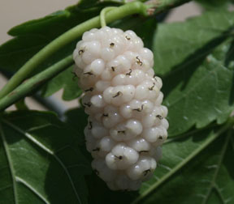
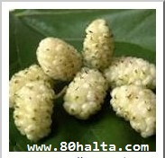
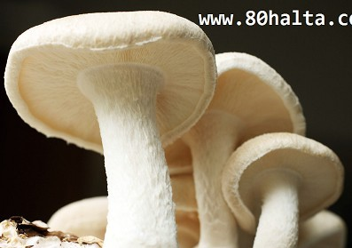
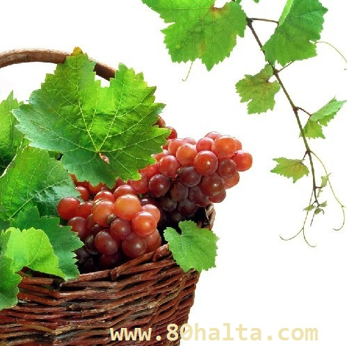
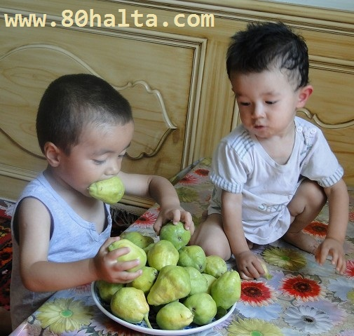
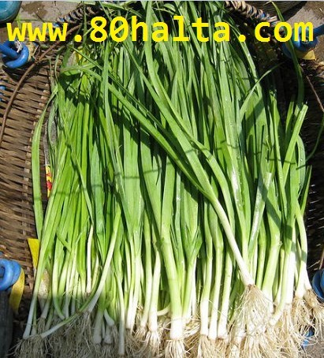
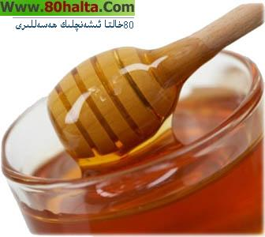
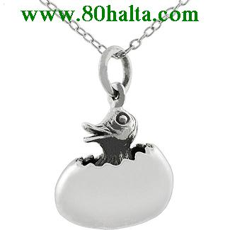

ئەسسالامۇ ئەلەيكۇم مۆھتىرەم تورداش، بلوگىمىزغا خۇش كەپسىز، قۇتلۇق قەدەملىرىڭىزگە مەرھابا!
 زەيتۇن ۋە سالات (ئارلاشما كۆكتات) ھەققىدە
زەيتۇن ۋە سالات (ئارلاشما كۆكتات) ھەققىدە
ئاپتورى:Birzat ۋاقتى:2014-05-08

كۈنىمىزدە يېمەك-ئىچمەك مولچىلىق بولسىمۇ ساغلاملىقىمىز ھەر قاچان خىرىسقا دۇچ كىلىۋاتقان ئەھۋالدا يەۋاتقان ئوزقلۇقىمىز، تۇرمۇش ئادەتلىرىمىز ھەققىدە كۆپرەك پاراڭ سىلىشىمىز نۇرمال ئىشقا ئايلىنىپ قالدى. خەلقىمىزنىڭ ئەنئەنىۋى ناشتىلىق، ئوزۇقلۇق ئۇسۇلىنىڭ ئۆزگىچە تەرەپلىرى ھەققىدە ئىلگىرى 80خالتا بلوگىدا كۆپ توختالغان ئىدىم. بولۇپمۇ گۈلقەنت، ھەسەل، جىگدە، گۈلە-قاق يەپ ئۇزۇن ئۆمۈر كۆرگەن كىشىلەر ھەققىدىكى بايانلار دېگەندەك. بۈگۈن بەزىلەرنىڭ زەيتۇن ھەققىدە سورىغان سۇئالىغا جاۋاب بەرگەچ بىردەم يەنە يەپ-ئىچىشنىڭ پارىڭىنى قىلساقمىكىن دەپ تېمىنى باشلىدىم.  تۈركيە كىنو فىلىملىرىنى كۆرۈپ يۈرۈپ ھازىر تۈرك چېيى ئىچىش بىرەر قۇر مودىغا ئايلىنىپ يەنە مودىدىن قالاي دەپ قالغىلىمۇ تۇردى، ھازىرقى پاراڭ تۈركلەرنىڭ ئەتىگەنلىك ناشتىلىق داستىخىنىدا داۋاملىق كۆرىدىغىنىمىز زەيتۇن، سالات دېگەندەكلەر كۆزىمىزگە كۆپرەك چىلىقىدۇ. زەيتۇن ھەققىدە پاراڭ بولسىلا
تۈركيە كىنو فىلىملىرىنى كۆرۈپ يۈرۈپ ھازىر تۈرك چېيى ئىچىش بىرەر قۇر مودىغا ئايلىنىپ يەنە مودىدىن قالاي دەپ قالغىلىمۇ تۇردى، ھازىرقى پاراڭ تۈركلەرنىڭ ئەتىگەنلىك ناشتىلىق داستىخىنىدا داۋاملىق كۆرىدىغىنىمىز زەيتۇن، سالات دېگەندەكلەر كۆزىمىزگە كۆپرەك چىلىقىدۇ. زەيتۇن ھەققىدە پاراڭ بولسىلا
ئۆرۈك پىشسا - ئۆرۈك ھەققىدە تېما يوللىدۇق!
ئاپتورى:Birzat ۋاقتى:2013-05-28

ئۆرۈكنىڭ تەبئىتى: بالدۇر پىشىدىغانلىرى - ھۆل سوغۇق ، كېچىكىپ تومۇز يەپ پىشىدىغىنى - ھۆل ئېسسىق، تومۇزنىڭ ئاخىرلىرى پىشىپ شاختا ئۇزۇنراق تۇرۇپ قالغانلىرى قۇرۇق ئېسسىق بولىدۇ.
خۇسۇسىيىتى: ئۇسسۇزلۇقنى بېسىش، سەپرانى قايتۇرۇش، توسالغۇلارنى ئېچىش، ماددىلارنى يۇمشۇتۇش، راكنىڭ ئالدىنى ئىلىش، يۈرەكنى ئاسراش قاتارلىق خۇسۇسىيەتلىرى بار. زىيانلىق تەسىرى:
ئاق ئۈجمىنىڭ خۇسۇسىيەتلىرى ھەققىدە
ئاپتورى:Birzat ۋاقتى:2013-05-27

ئەجداتلىرىمىزدىن قالغان «ئۈژمە ئۆستۈرگەن كىشىنىڭ ئۈژمىسى پىشىپ مېۋىسى يەرگە تۆكۈلگەندە، ئۇنىڭ گۇناھى بولسا ئۈژمە بىلەن بىللە تۆكۈلىدۇ»، «ئۈژمە پىش، ئاغزىمغا چۈش» دېگەنگە ئوخشاش ماقال-تەمسىللەر بىزگە خەلقىمىزنىڭ ئۇزاق زامانلاردىن بۇيان، ئۈژمىنى ئالاھىدە چوڭ بىلىپ ئۆستۈرۈشكە ئەھمىيەت بېرىپ كېلىۋاتقانلىقىنى چۈشەندۈرۈپ بېرىدۇ.
ئاق ئۈجمە مېۋىسىنىڭ قان كۆپەيتىپ، مېڭە، ئۆپكە، جىگەر، بۆرەككە قۇۋۋەت بىرىش، ماغدۇرلاندۇرۇش....
خەتكۈش: ئۈجمە
نەشە ئۇرۇقى يۇقۇرى قان بىسىمغا پايدا قىلامدۇ؟
ئاپتورى:Birzat ۋاقتى:2012-01-17
قان بېسىم دېگەن بىر قېتىم چۈشۈرۈپ قويغانغا جايىدا جىم تۇرىدىغان نەرسە ئەمەس. شۇڭا قان بېسىمنى تىزگىنلەشتە ئۇزۇن مۇددەتلىك پىلان بولۇشى، دورا ۋە يېمەكلىكلەرنى، مۇۋاپىق بەدەن چىنىقتۇرۇش دېگەنلەرنى تەرتىپلىك ئىلىپ بىرىش كېرەك. كەندىر يوپۇرمىقى ۋە ئۇرىقىنىڭ قان بېسىمىنى مۇئەييەن چۈشۈرۈش خۇسۇسىيىتى بار. لىكىن بۇنى ئۇزۇن مۇددەت قاينىتىپ ئىچكىلى بولمايدۇ. نېرۋا سىستېمىسىغا باشقا زىيانلىق ئاقىۋەتلەرنى ئىلىپ كىلىشى مومكىن. قان بىسىمغا دورا ئىچىشتە دوختۇرنىڭ كۆرسەتمىسى بويچە رېتسىپلىق دورا ئىچىپ بىرىشى كېرەك. قان بىسىمىنى چۈشۈرىدىغان ئادەتتە ئىستىمال قىلسا بولىدىغان، ئۆزى ئەرزان، تېپىشقا ئاسان نەرسىلەردىن لىمون (تىلىپ قايناق سۇغا سىلىپ ئىلىدۇ)، قوناق ساقىلى (چاي دەملەپ ئىچىدۇ)، كەرەپشە (چىڭسەي)، پەمىدۇر، تۇرۇپ، قارا ئۈرۈك، گىلاس، تاۋۇز، ھەسەل، چىلان، قېتىق قاتارلىقلار.
يۇقۇرى قان بىسىم بىمارلىرى دېققەت قىلىشقا تېگىشلىك ئىش شۇكى:
ھېكايەت: نامراتنىڭ گۆشى-چامغۇر
ئاپتورى:Birzat ۋاقتى:2011-12-10
بىر يۇرتتا ئۇيغۇر تىبابىتى ناھايىتى تەرەققى قىلغان بۇلۇپ، ھەر بىر ئادەمگە ئۆزىنى قانداق كۈتۈش، نېمە كېسەلگە نېمە شىپا بۇلۇشتىن تارتىپ بىلىدىكەن. بۇ يۇرتتا كامالەتكە يەتكەن بىر تىۋىپ بار بۇلۇپ، ئۇنىڭ نۇرغۇن شاگىرتلىرى بار ئىكەن. شاگىرتلىرى ئىچىدە ئىخلاسمەن، تىرىشچان، بىلىمى تېز يۈكسېلىۋاتقان بىر شاگىرتى ئۇنىڭ دېققىتىنى تارتىدىكەن. ئۇستاز تېۋىپ بىر كۈنى شاگىرتىنى چاقىرىپ:‹‹سېنڭ تىۋىپلىق ئىلىمىڭ خېلى كامال تاپتى، ئۆز ئالدىڭغا ئەمخانا ئېچىپ كېسەل داۋالىساڭ بولىدۇ. شۇڭا ساڭا بېرىدىغان مەسلىھەتىم، بۇ يەردىن يىراق بىر جايدا تۇرپان دىگەن يۇرت بار، ئۇ يەردىن بوران كۆپ چىقىدۇ، ھاۋاسى توپا-چاڭ، بۇنداق مۇھىتتا كېسەل كۆپ كۆرۈلىدۇ، سەن شۇ يۇرتقا بېرىپ كىشىلەرنى داۋالىغىن›› دەپ دۇئا بېرىپتۇ. شۇنىڭ بىلەن شاگىرت بۇ يۇرتقا كېلىپ ئەمخانا ئېچىپتىكەن، بىر يىلغىچە تۈزۈك كېسەلمۇ كىرمەپتۇ. قارىسا كىشىلەر چامغۇرنى سۇيۇقئاشقا توغراپ سېلىۋاتقانلىغىنى، گۆش پىشۇرسا شورپىغا چامغۇر سېلىۋاتقانلىغىنى ۋە يەنە باشقا ئۇسوللار بىلەنمۇ كۈندە ئىستىمال قىلۋاتقانلىغىنى كۆرۈپ، كىشىلەرنىڭ كېسەل بولماسلىق سەۋەبىنى چۈشىنىپ، ئۇستازىنىڭ يېنىغا قايتىپ كېتىپتۇ. ئۇستازى قايتىپ كېلىش سەۋەبىنى سورىغان ئىكەن،...
كۈز- قىش پەسلىدىكى بۆرەكنى قۇۋۋەتلەيدىغان 4 خىل مېۋە
ئاپتورى:Birzat ۋاقتى:2011-11-27

بىرزات ئىلاۋىسى: ھەر قايسى ئىقلىم ۋە جۇغراپىيلىك شارائىت، يېمەك-ئىچمەك، ئوزۇقلىنىش ۋە تۇرمۇش ئادىتى، گېن-ئىرسىيەت ئامىلى دېگەندەك پەرقلەر سەۋەبلىك ھەر قايسى ئىقلىملاردا ياشىغۇچى مىللەتلەرنىڭ مىزاج ئالاھىدىلىكىدە رۇشەن ئوخشىماسلىقلار مەۋجۇت. شۇ سەۋەب ھەر قايسى جايلاردا تېرىپ ئۆستۈرىلىدىغان ئۆسۈملۈك-كۆكتات، مېۋىلەرنىڭ ئادەم بەدىنىگە بىرىدىغان تەسىرىدىمۇ مۇئەييەن پەرقلەر مەۋجۇت. مەسىلەن: جۇڭگۇ تېبابىتىدە يۇمغاقسۈتنىڭ تەبئىتىنى ئىسسىق ياكى ئىسسىققا مايىل دەپ تەبىر بىرىدۇ. ئۇيغۇر تېبابىتىدە يۇمغاقسۈتنى ئۆتكۈر دەرىجىدە سوغۇق دەپ قارايدۇ. بۇ ئىككىلا قاراشنى ئوتتۇرغا قويغۇچىلارنىڭ قاراشلىرى ....
خەتكۈش: كۈز- قىش پەسلىدىكى بۆرەكنى قۇۋۋەتلەيدىغان 4 خىل مېۋە
ئىممۇنېت كۈچىنى ئاشۇرىدىغان يەتتە خىل يېمەكلىك
ئاپتورى:Birzat ۋاقتى:2011-10-28

مۇشۇ يېقىنقى بىر ھەپتە ئىچىدە دورا دۇكانلىرىدا زۇكام ۋە ئۇنىڭ ئالدىنى ئالىدىغان دورا ئېلانلىرىنىڭ كۆپۈيۈپ كىتىشى قىش پەسلى يىتىپ كىلىش ئالدىدا تۇرغانلىقىنىڭ بىر ئېنىق ئىپادىسى بولسا كىرەك.مۇبادا سىز قىش پەسلىدىكى تۈرلۈك كىسەللەرنىڭ ئالدىنى ئېلىشقا تەييارلىق قىلىپ بولالمىغان بولسىڭىز،سىز چۇقۇم يىتەرلىك ۋاقىت چىقىرىپ بۇنى كۈندىلىك پائالىيەت تەرتىپىگە كىرگۈزۋېلىڭ. نىيوروك شەھرى ۋېلككورنىل تىببى ئىنىستۇتى(Weill Cornell Medical College) نىڭ پىروفىسورى، ئىممۇنىت ۋە مىكرو بىئولاگىيە كەسپىنىڭ تىببى پەنلەر دوكتۇرى ئاننا موسكونا(Ane Moscona) مۇنداق دەيدۇ::
ئۈزۈمنىڭ ئوزۇقلۇق تەركىبى ۋە شىپالىق رولى
ئاپتورى:Birzat ۋاقتى:2011-09-24

ئۈزۈم بۇرۇندىن مەشھۇر مېۋە بولۇپ ئادەتتە مېۋە ئورنىدا ئىستىمال قىلىنغاندىن سىرت ئۇيغۇر تېبابىتىمىزدە ئۈزۈمدىن ھەر خىل شاراب-ئىچىملىكلەرنى، شىرنە، سىركە دېگەندەكلەرنى تەييارلاپ ساقلىقنى ساقلاش ۋە كېسەل داۋالاشتا ئەتۋارلىنىپ ئىشلىتىلىدۇ. ياشانغان كىشىلىرمىز ئارىسىدا ئەتتىگەندە ناشتىدا ئۈزۈم بىلەن نان يېسە ئادەمنى ياشارتىدۇ دەيدىغان قاراش بار. ئۈزۈم بىلەن نان يېسە سۈننەت دەيدىغان گەپلەرنىمۇ ئاڭلاپ تۇرىمىز. ئەمەلىيەتتىمۇ مەيلى قۇرۇق ئۈزۈم بولسۇن ياكى ھۆل ئۈزۈم بولسۇن نان بىلەن يېسە ئالاھىدە ئېسىل ۋە يېيىشلىك بولىدۇ. ئۈزۈمنىڭ شىپالىق رولى ھەققىدە ئۇيغۇر تېبابەت مەنبەلىرىدە شۇنداق بايانلار بار:
خەتكۈش: ئۈزۈم
لىموننىڭ خۇسۇسىيەتلىرى ھەققىدە
ئاپتورى:Birzat ۋاقتى:2011-09-19

لىمون تەركىبىدە ۋىتامىن B1، ۋىتامىن B2، ۋىتامىن B6 ، ۋىتامىن C، نىكوتىن كىسلاتاسى، شۇنىڭدەك كالتىسىي، تۆمۈر، كالىي، ناتىرىي قاتارلىق مىنېرال ماددىلار بار. لىمون شىرنىسى بۆرەكتە تاش پەيدا بولۇشنى توسىدۇ، ھەتتا شەككىللەنگەن تاشنى ئىرىتىۋېتەلەيدۇ.
لىمون يۈرەك قان تومۇر كېسەللىكلىرىىنىڭ ئالدىنى ئالىدۇ ۋە داۋالايدۇ. كالتىسىي ئىئوننىڭ قاننى ئۇيۇتۇش رولىنى ئاجىزلاشتۇرۇپ، يۇقۇرى قان بېسىم ۋە يۈرەك مۇسكۇل تىقىلمىسىنىڭ ئالدىنى ئالىدۇ ۋە داۋالايدۇ.
لىمون ئارتېرىينىڭ قېتىشىشى ۋە قان نۆكچىسىنىڭ شەكىللىنىشىنى توسىدۇ. نىترىتلارنىڭ شەكىللىنىشىنى تورمۇزلايدۇ، شۇڭا ئۇنىڭ راكقا قارشى تۇرۇش رولى بار.
لىمون ئىچ سۈرۈشنى داۋالايدۇ، تارقىلىشچان زۇكامنىڭ ئالدىنى ئالىدۇ. ئىسسىقتىن بولغان زۇكامغا....
قەشقەرنىڭ ئېسىل يەرلىك مېۋىسى-قوتۇر ئامۇت
ئاپتورى:Birzat ۋاقتى:2011-08-22

بۇ ئامۇت ئائىلىسىگە تەۋە مېۋىلىك دەرەخ - قوتۇر ئامۇتنىڭ مېۋىسى بولۇپ ئاساسلىقى قەشقەرنىڭ ئەتراپىدىكى ناھىيە-يېزىلىرىنىڭ ھەر بىر ئائىلىلىرىدە دېگۈدەك باغ-ھويلىلىرىدا ئەھيا قىلىدىغان بىر تۈرلۈك يەرلىك مېۋە سورتى. بۇ مېۋە يەنە خوتەن ۋە ئاتۇشنىڭ قىسمەن جايلىرىدىمۇ ئەھيا قىلىنىدۇ. قوتۇر ئامۇت ئاساسەن 8-9-ئايلاردا پىشىدۇ. بۇ مېۋە تەمىنىڭ شىرىنلىكى، شىپالىق ۋە ئوزۇقلۇق رولىنىڭ يۇقۇرى بولىشى بىلەن خەلقىمىزنىڭ ئەتىۋارلاپ ئىستىمال قىلىشىغا ئىرىشكەن. قوتۇر ئامۇت ھەققىدە كىتاب-ماتىرياللار ۋە تور تۇنياسىدا ھېچقانداق مەلۇمات بىرىلمىگەن بولغاچقا بۇنىڭ ئوزۇقلۇق ۋە شىپالىق رولى ھەققىدە ئۆز تەجىربەم ئاساسىدا بايقىغانلىرىمنى تورداشلار بىلەن ئورتاقلاشماقچىمەن. بۇ ھەقتە يەنىمۇ كۆپ ئۇچۇر -مەلۇماتلاردىن خەۋەردار كىشىلەرنىڭ 80خالتا بلوگىغا ئىشتىراك ئېتىشىنى تەۋسىيە قىلىمەن.
قوتۇر ئامۇتنىڭ تەبئىتى:
رامىزانلىق مېۋە ئىچىملىكى تەييارلاش
ئاپتورى:Birzat ۋاقتى:2011-07-22

ئۇلۇق رامىزان مۇبارەك كىلىش ھارپىسىدا ھاۋا بۆلەكچىلا ئىسسىپ راھەتكە كۆنگەن تەنلەرنى، سالقىنلىق ئىزدەپ ئارانلا تۇرىدىغان نازۇك جانلارنى قاقشاتقىلى تۇردى. رايۇنىمىزدا يىلدىن -يىلغا پىژغىرىم ئىسسىققا قاراپ كىلىۋاتقان رامىزان ھەر بىر مۇسۇلماننىڭ تاقىتىنى، نەپسىنى تىزگىنلەپ ئاچلىق، ئۇسسۇزلۇق، ھارغىنلىققا قارشى ئىرادىسىنى تاۋلايدىغان چوڭ بىر سىناق. ئىپتاردا مۇزدەك تاۋۇز ياكى شاپتۇل سۈيى ئىچىۋالسا روزىدارلىقتىكى تەشنالىقنى باسسا ئەجەپ ئەمەس. كۆرۈپ تۇرۇۋاتقىنىمىزدەك راھەت قوغلىشىپ ھەر خىل تەم ھەر خىل رەڭدىكى سانائەت ئىچىملىكلىرىنى ئىچىۋەرسەك ساقلىقىمىزغا بولغان زېيىنى مۆلچەرلىگۈسىز بولغۇدەك. چۈشتە ئۆيگە كىلىپ توڭلاتقۇدىكى قوغۇننى قىرىپ سۈيىنى چىقىرىپ ئىچەي دەپ قاپتىكەنمە، ئەتتىگەن كېيگەن مايكىنى <<ۋەيران>> قىپتىمەن. شۇڭا بايا رامىزانغا ھازىردىن باشلاپ تەييارلىق كۆرۈپ قوياي دەپ بازاردىن مېۋە سىقىش ماشىنىسىدىن بىرنى سىتىۋالدىم. ئۆيدە ئۆزۈم يالغۇز باياتىن بىرى سېقىش ماشىنىسىدا 4 خىل مېۋە سۈيى تەييارلاپ باقتىم.
ئاچچىقسۇنىڭ ئوزۇقلۇق تەركىبى ۋە رولى
ئاپتورى:Birzat ۋاقتى:2011-03-26

ئاچچىقسۇ جۇڭگۇدا ئىككى مىڭ يىلدىن ئارتۇق ئىستېمال قىلىنىش تارىخىغا ئىگە. ئۇنىڭ تەمى چۈچۈمەل ھەم كۈچلۈك، پۇرىقى مەززىلىك ھەم يېقىشلىق بولۇپ، تەم تەڭشەشتە كەم بولسا بولمايدىغان بىر خىل تەم تەڭشەش ماتىريالىدۇر.
ئۇنىڭ تۈرلىرى ئاساسلىقى گۈرۈچ ئاچچىقسۇ،سۈرلەنگەن ئاچچىقسۇ، شېكەر ئاچچىقسۇ، ھاراق ئاچچىقسۇ، ئاق ئاچچىقسۇ قاتارلىقلاردىن ئىبارەت.ئاچچىقسۇنىڭ چۈچۈمەل تەمىنىڭ كۈچلۈك ئاجىزلىقى ئاساسلىقى ئۇنىڭ تەركىبىدىكى سىركە كىسلاتاسى مىقدارىنىڭ ئاز-كۆپلۈكى تەرىپىدىن بەلگىلىنىدۇ.
ئوزۇقلۇق تەركىبى ۋە رولى
ئاچچىقسۇ تەركىبىدە ۋىتامىنB2،كالتىسىي،فوسفور، تۆمۈر قاتارلىقلار بار.
ئاچچىقسۇ قورۇمىنىڭ يېڭى، تاتلىق، مەززىلىك قاتارلىق تەمىلىرىنى ئاشۇرۇىدۇ، غەيرىي پۇرىقىنى تۈگىتىدۇ، خام ماتىريال تەركىبىدىكى ۋىتامىنCنىڭ زىيانغا ئۇچرىشنى ئازايتىدۇ،توخۇ سۆڭىكى، بېلىق قىلتىرقىنى يۇمشىتىدۇ، خام ماتېرىيال تەركىبىدىكى كالتىسىي،تۆمۈر،فوسفورنىڭ ئېرىشىنى ئىلگىرى سۈرىدۇ، شۇنىڭ بىلەن بىللە يەنە ھەزىم قىلىش سۇيۇقلۇقنىڭ ئاجرىتپ چىقىرلىشىنى ئىلگىرى سۈرۈپ، تاماق سىڭدۇرىدۇ.
ئاچچىقسۇنىڭ ئىنتايىن كۈچلۈك باكتېرىيە تىزگىنلەش رولى بار بولۇپ، قىسقا ۋاقىت ئىچىدىلا يىرڭلاتقۇچى ئۈزۈمسىمان شارچە باكتېرىيە قاتارلىقلارنى ئۆلتۈرەلەيدۇ، تولغاق قاتارلىق ئۈچەي يولى كېسەللىكلىرى، كېزىك، تارقىلىشچان زوكام ۋە نەپەس يولى كېسەللىكلىرىنىڭ ئالدىنى ئېلىش رولى بار.
ئاچچىقسۇ چارچاشنى تۈگتىپ، ....
خەتكۈش: ئاچچىقسۇ
سامساق مايسىسى(كۆك سامساق) نىڭ ئوزۇقلۇق تەركىبى ۋە رولى
ئاپتورى:Birzat ۋاقتى:2011-03-17

سامساق مايسىسى(蒜苗) يەنە سامساق كۆكى دەپمۇ ئاتىلىدۇ، ئۇ سامساقنىڭ يۇمران مايسىسى يېتىلىپ مۇئەييەن مەزگىلگە يەتكەن چاغدىكى كۆك مايسىسىدىن ئىبارەت. ئۇ سامساقنىڭ خۇش پۇراق ئاچچىق تەمىگە ئىگە، ئەمما ئۇنىڭدا سامساقنىڭ غىدىقلاشچانلىقى يوق بولۇپ، ئادەتتە كۆكتات ئورنىدا ئىشلىتىلىتىلىدۇ.
ئوزۇقلۇق تەركىبى ۋە رولى:
خەتكۈش: سامساق
قارائۈرۈكنىڭ شىپالىق خۇسۇسىيەتلىرى
ئاپتورى:Birzat ۋاقتى:2011-02-12

جىگدە ۋە جىگدە چېچىگىنىڭ شىپالىق خۇسۇسىيەتلىرى ھەققىدە
ئاپتورى:Birzat ۋاقتى:2011-02-12
 جىگدە گۈلىنى سوقۇپ، خېمىر قىلىپ جاراھەتلەرگە تېڭىش ياكى قاينىتىپ موپاسىل، سۇسلاپ كەتكەن پەيلەرنى ياغلاش پايدىلىق، ئۇ يەنە چاچنى ئۆستۈرىدۇ. جىگدە چېچىگى گۈلقەنتىنىڭ ئەر-ئاياللاردىكى بەل-بۆرەك، بالياتقۇ، ئاشقازان سوۋۇپ ئاجىزلاشقان، شەھۋەت (جىنسىي ھەۋەس) سۇسلاشقا مەنپەئىتى ئالاھىدە ياخشى. جىگدە چېچىگى گۈلقەنتى تېپىلمىغان ئەھۋالدا ئىشەنچلىك جىگدە چېچىگى ھەسىلىمۇ بولىدۇ. ھەسەل چوقۇم كۆنەكتە ياخشى پىشقان، ھېچقانداق ئارلاشما بولمىغان ئىشەنچلىك ھەسەل بولىشى كېرەك.
جىگدە گۈلىنى سوقۇپ، خېمىر قىلىپ جاراھەتلەرگە تېڭىش ياكى قاينىتىپ موپاسىل، سۇسلاپ كەتكەن پەيلەرنى ياغلاش پايدىلىق، ئۇ يەنە چاچنى ئۆستۈرىدۇ. جىگدە چېچىگى گۈلقەنتىنىڭ ئەر-ئاياللاردىكى بەل-بۆرەك، بالياتقۇ، ئاشقازان سوۋۇپ ئاجىزلاشقان، شەھۋەت (جىنسىي ھەۋەس) سۇسلاشقا مەنپەئىتى ئالاھىدە ياخشى. جىگدە چېچىگى گۈلقەنتى تېپىلمىغان ئەھۋالدا ئىشەنچلىك جىگدە چېچىگى ھەسىلىمۇ بولىدۇ. ھەسەل چوقۇم كۆنەكتە ياخشى پىشقان، ھېچقانداق ئارلاشما بولمىغان ئىشەنچلىك ھەسەل بولىشى كېرەك.
ﺋﻪﺳﻜﻪﺭﺗﯩﺶ: ﺑﯘﻧﯩﯔ ﭼﯧﭽﯩﮕﯩﻨﻰ ﺑﺎﻻﻏﻪﺗﻜﻪ ﻳﻪﺗﻜﻪﻥ ﻗﯩﺰﻻﺭﻏﺎ ﭘﯘﺭﺍﺗﻤﺎﺳﻠﯩﻖ ﻛﯩﺮﻩﻙ.
ﺯﯨﻴﺎﻧﻠﯩﻖ ﺗﻪﺳﯩﺮﻯ:
خەتكۈش: جىگدە
ﻗﯩﺰﯨﻞ ﮔﯜﻝ ﯞﻩ ﺋﯘﻧﯩﯔ ﺷﯩﭙﺎﻟﯩﻖ ﺭﻭﻟﯩﻨﻰ ﺗﻮﻧﯘﺷﺘﯘﺭﯗﺵ
ئاپتورى:Birzat ۋاقتى:2011-01-28
 ﮬﻪﻣﻤﯩﻤﯩﺰﮔﻪ ﺗﻮﻧﯘﺷﻠﯘﻕ ﺑﻮﻟﻐﺎﻥ ﻗﯩﺰﯨﻞ ﮔﯜﻝ ﺋﻪﺗﯩﺮﮔﯜﻝ ﺋﺎﺋﯩﻠﯩﺴﯩﺪﯨﻜﻰ ﺑﻮﻳﻰ ﺑﯩﺮﻩ ﻣﯧﺘﯩﺮ ﻛﯩﻠﯩﺪﯨﻐﺎﻥ، ﻏﻮﻟﻰ ﺗﯩﻚ، ﺗﻮﭘﻠﯩﺸﯩﭗ ﺋﯚﺳﯩﺪﯨﻐﺎﻥ ﭼﺎﺗﻘﺎﻝ ﺋﯚﺳﯜﻣﻠﯜﻙ ﻗﯩﺰﯨﻞ ﮔﯜﻟﻨﯩﯔ ﮔﯜﻝ ﺑﻪﺭﮔﯩﺴﻰ ﺑﻮﻟﯘﭖ ﺗﯩﺒﺎﺑﻪﺗﺘﻪ <<ﻗﯩﺰﯨﻞ ﮔﯜﻝ>> ﻳﺎﻛﻰ ﭘﺎﺭﯨﺴﭽﻪ ﺋﺎﺗﺎﭖ<<ﮔﯜﻟﺴﯘﺭﯗﺥ>>ﻧﺎﻣﯩﺪﺍ ﺩﻭﺭﯨﻐﺎ ﺋﯩﺸﻠﯩﺘﯩﻠﯩﺪﯗ.
ﮬﻪﻣﻤﯩﻤﯩﺰﮔﻪ ﺗﻮﻧﯘﺷﻠﯘﻕ ﺑﻮﻟﻐﺎﻥ ﻗﯩﺰﯨﻞ ﮔﯜﻝ ﺋﻪﺗﯩﺮﮔﯜﻝ ﺋﺎﺋﯩﻠﯩﺴﯩﺪﯨﻜﻰ ﺑﻮﻳﻰ ﺑﯩﺮﻩ ﻣﯧﺘﯩﺮ ﻛﯩﻠﯩﺪﯨﻐﺎﻥ، ﻏﻮﻟﻰ ﺗﯩﻚ، ﺗﻮﭘﻠﯩﺸﯩﭗ ﺋﯚﺳﯩﺪﯨﻐﺎﻥ ﭼﺎﺗﻘﺎﻝ ﺋﯚﺳﯜﻣﻠﯜﻙ ﻗﯩﺰﯨﻞ ﮔﯜﻟﻨﯩﯔ ﮔﯜﻝ ﺑﻪﺭﮔﯩﺴﻰ ﺑﻮﻟﯘﭖ ﺗﯩﺒﺎﺑﻪﺗﺘﻪ <<ﻗﯩﺰﯨﻞ ﮔﯜﻝ>> ﻳﺎﻛﻰ ﭘﺎﺭﯨﺴﭽﻪ ﺋﺎﺗﺎﭖ<<ﮔﯜﻟﺴﯘﺭﯗﺥ>>ﻧﺎﻣﯩﺪﺍ ﺩﻭﺭﯨﻐﺎ ﺋﯩﺸﻠﯩﺘﯩﻠﯩﺪﯗ.
ﺑﯘ ﮔﯜﻟﻨﯩﯔ ﺧﻪﻧﺰﯗﭼﻪ ﺋﺎﺗﯩﻠﯩﺸﯩﻨﻰ <<ﺋﯘﻳﻐﯘﺭ ﺗﯩﺒﺎﺑﯩﺘﯩﺪﻩ ﻛﯚﭖ ﺋﯩﺸﻠﯩﺘﯩﻠﯩﺪﯨﻐﺎﻥ ﺧﺎﻡ ﺩﻭﺭﯨﻼﺭ>> ﺩﯦﮕﻪﻥ ﻛﯩﺘﺎﺑﺘﺎ 玫瑰花
ﺋﻪﺗﯩﺮﮔﯜﻟﻨﻰ 月季花
ﺩﻩﭖ ﺋﺎﭘﺘﯘ. ﺗﻮﻏﺮﯨﺴﻰ ﻗﺎﻳﺴﻰ ﺑﯩﻠﻤﯩﺪﯨﻢ.
ﺋﯧﻨﮕﯩﻠﯩﺰﭼﯩﺴﯩﻨﻰ : rose flower ﺩﯦﺴﻪ ﺗﻮﻏﺮﯨﻤﯘ ﻳﺎﻛﻰ red flower ؟
ﻗﯩﺰﯨﻞ ﮔﯜﻟﻨﯩﯔ ﺷﯩﭙﺎﻟﯩﻖ ﺭﻭﻟﻰ:
خەتكۈش: قىزىلگۈل
قەۋزىيەت ھەم ئورۇقلىتىشتىكى شىپاسى كاتتا ئۆسۈملۈك - يالپۇز
ئاپتورى:Birzat ۋاقتى:2010-12-31

يالپۇزنىڭ شىپالىق خۇسۇسىيەتلىرى كۆپ بولۇپ ئېرىق-ئۆستەڭ بويلىرىدا ئۆسىدىغان، تەنەرقى ئەرزان دورا ئۆسۈملىكىدۇر. يالپۇز ئادەتتە ئاشقازاننى قۇۋۋەتلەپ ئىشتەينى ئىچىش، كۆڭۈل ئىلىشىش، قۇسۇشنى تۈگۈتۈش،ئاشقازان، ئۈچەي، ئۆتتىكى يەل-توسالغۇلارنى تارقىتىش، قەۋزىيەتنى راۋان قىلىش، ئورۇقلىتىش، زەھەر قايتۇرۇش دېگەندەك خۇسۇسىيەتلىرى بار.
يېقىندا ئامېرىكا ‹‹ گېزىت –ژۇرنال سەھپىلىرىدىن››ژۇرنىلىدا يالپۇزنىڭ تۆۋەندىكىدەك ئون خىل پايدىسى ئالاھىدە تونۇشتۇرۇلغان :
خەتكۈش: يالپۇز
ﺷﯘﻣﺒﯘﻳﺎ ﯞﻩ ﺋﯘﻧﯩﯔ ﺷﯩﭙﺎﻟﯩﻖ ﺭﻭﻟﯩﻨﻰ ﺗﻮﻧﯘﺷﺘﯘﺭﯗﺵ
ئاپتورى:Birzat ۋاقتى:2010-12-05

ﺷﯘﻣﺒﯘﻳﺎ ﺋﺎﺋﻠﯩﺴﯩﺪﯨﻜﻰ ﺑﯩﺮ ﻳﯩﻠﻠﯩﻖ ﺳﺎﻣﺎﻥ ﻏﻮﻟﻠﯘﻕ ، 10-50 ﺳﺎﻧﺘﯩﻤﯩﺘﯩﯧﺮﻏﯩﭽﻪ ﺋﯚﺳﯩﺪﯨﻐﺎﻥ ﺗﻪﻳﻴﺎﺭﺗﺎﭖ ﺋﯚﺳﯜﻣﻠﯜﻙ ﺑﻮﻟﯘﭖ ﭘﯜﺗﯜﻥ ﺋﯚﺳﯜﻣﻠﯜﻙ ﺗﯧﻨﻰ ﺗﯧﺒﺎﺑﻪﺗﭽﯩﻠﯩﻜﺘﻪ ﺩﻭﺭﺍ ﺋﻮﺭﻧﯩﺪﺍ ﺋﯩﺸﻠﯩﺘﯩﻠﯩﺪﯗ. ﻗﻮﻏﯘﻥ -ﺗﺎﯞﯗﺯﻻﺭﻏﺎ ﺯﯨﻴﺎﻧﻠﯩﻖ ﺑﻮﻟﻐﺎﭼﻘﺎ ﺧﻪﻟﻘﯩﻤﯩﺰ ﺷﯘﻣﺒﯘﻳﯩﻨﻰ ﺋﯚﺯ ﻣﻪﻧﭙﻪﺋﯩﺘﯩﻨﻰ ﺩﻩﭖ ﺑﺎﺷﻘﯩﻼﺭﻏﺎ ﺯﯨﻴﺎﻥ ﺳﺎﻟﯩﺪﯨﻐﺎﻥ، ﭘﺎﺭﺍﺯﯨﺖ، ﺯﯨﻴﺎﻧﺪﺍﺵ ﺩﯦﮕﻪﻧﺪﻩﻙ ﻣﻪﻧﯩﻠﻪﺭﺩﯨﻤﯘ ﺋﯩﺸﻠﯩﺘﯩﺪﯗ.
ﺧﻪﻧﺰﯗﭼﻪ : lie dang 列当
ﺗﻪﺑﺌﯩﺘﻰ : ﻗﯘﺭﯗﻕ ﺋﯩﺴﺴﯩﻖ
ﺷﯩﭙﺎﻟﯩﻖ ﺭﻭﻟﻰ: ﺑﯚﺭﻩﻛﻨﻰ ﻗﯘﯞﯞﻩﺗﻠﻪﺵ، ﺑﻪﺩﻩﻧﻨﻰ ﻗﯩﺰﯨﺘﯩﺶ، ﭘﻪﻱ ﯞﻩ ﻣﯘﺳﻜﯘﻟﻼﺭﻧﻰ ﭼﯧﯖﯩﺘﯩﺶ.
ﺋﯩﺸﻠﯩﺘﯩﺪﯨﻐﺎﻥ ﻛﯧﺴﻪﻟﻠﯩﻜﻠﻪﺭ:
لاچىندانە تەركىبلىك ئالاھىدە چاي دورا رېتسىپلىرى
ئاپتورى:Birzat ۋاقتى:2010-12-05
 ﺋﯧﻐﯩﺰﻧﻰ ﺧﻮﺷﺒﯘﻱ ﻗﯩﻠﯩﺶ، ﺋﺎﺷﻘﺎﺯﺍﻧﻨﻰ ﻗﯘﯞﯞﻩﺗﻠﻪﺵ، ﮬﻪﺯﯨﻤﻨﻰ ﻳﺎﺧﺸﯩﻼﺵ، ﻳﻪﻝ ﺗﺎﺭﻗﯩﺘﯩﺶ، ﻛﯚﯕﯜﻟﻨﻰ ﺧﯘﺵ ﻗﯩﻠﯩﺶ، ﺋﺎﻏﺮﯨﻖ ﭘﻪﺳﻪﻳﺘﯩﺶ ﻗﺎﺗﺎﺭﻟﯩﻖ ﺧﯘﺳﯘﺳﯩﻴﻪﺗﻠﯩﺮﻯ ﺑﺎﺭ.
ﺋﯧﻐﯩﺰﻧﻰ ﺧﻮﺷﺒﯘﻱ ﻗﯩﻠﯩﺶ، ﺋﺎﺷﻘﺎﺯﺍﻧﻨﻰ ﻗﯘﯞﯞﻩﺗﻠﻪﺵ، ﮬﻪﺯﯨﻤﻨﻰ ﻳﺎﺧﺸﯩﻼﺵ، ﻳﻪﻝ ﺗﺎﺭﻗﯩﺘﯩﺶ، ﻛﯚﯕﯜﻟﻨﻰ ﺧﯘﺵ ﻗﯩﻠﯩﺶ، ﺋﺎﻏﺮﯨﻖ ﭘﻪﺳﻪﻳﺘﯩﺶ ﻗﺎﺗﺎﺭﻟﯩﻖ ﺧﯘﺳﯘﺳﯩﻴﻪﺗﻠﯩﺮﻯ ﺑﺎﺭ.
ﺋﯘﻳﻐﯘﺭ ﺗﯩﺒﺎﺑﻪﺗﺘﻪ ﺋﯩﺸﻠﯩﺘﯩﻠﯩﺪﯨﻐﺎﻥ ﻛﯧﺴﻪﻟﻠﯩﻜﻠﻪﺭ: ﺋﯧﻐﯩﺰ ﭘﯘﺭﺍﺵ، ﻗﻮﺭﺳﺎﻕ ﺋﯩﺴﯩﻠﯩﺶ، ﮬﻪﺯﯨﻢ ﺑﯘﺯﯗﻟﯘﺵ، ﻗﻮﺭﺳﺎﻕ ﺋﺎﻏﺮﯨﻘﻰ، ﻛﯚﯕﯜﻝ ﺋﯩﻠﯩﺸﯩﺶ،ﮬﻪﺯﯨﻢ ﺋﺎﺟﯩﺰﻟﯩﻘﻰ، ﻳﯜﺭﻩﻙ ﺋﺎﺟﯩﺰﻟﯩﻘﻰ، ﮬﯧﻖ ﺗﯘﺗﯘﺵ ﯞﻩ ﺳﻮﻏﯘﻗﺘﯩﻦ ﺑﻮﻟﻐﺎﻥ ﺧﺎﭘﯩﻐﺎﻥ ﻗﺎﺗﺎﺭﻟﯩﻘﻼﺭﻏﺎ ﺋﯩﺸﻠﯩﺘﯩﻠﯩﺪﯗ. لاچىندانە ئادەتتە چايخانىلارنىڭ ئاساسلىق ئېسىل چاي خۇرۇچلىرىنىڭ بىرسى ھېسابلىنىدۇ.
تۆۋەندە لاچىندانە تەركىبلىك بىر نەچچە خىل چاي رېتسىپى تونۇشتۇرىلىدۇ:
بىرزات بۇرادەرلەر چايلىقى
خەتكۈش: لاچىندانە
بىھىنىڭ شىپالىق خۇسۇسىيەتلىرى
ئاپتورى:Birzat ۋاقتى:2010-12-02
 بېھى ئادەتتە بەدەننى قۇۋۋەتلەش ، قان كۆپەيتىش ، ماغدۇرسىزلىق ۋە روھسىزلىقنى تۈگىتىش ، سۈيدۈكنى راۋانلاشتۇرۇش ئۈچۈن ئىشلىتىلىدۇ . بېھىنىڭ سىقىپ چىقىرىلغان سۈيى بىر نەچچە كۈن تۇرغۇزۇلۇپ ئېچىتىلغاندىن كېيىن ، تاشقى ئەزالارنىڭ ئىشىقىغا چېپىپ بېرىلسە ، مەنپەئەت قىلىدۇ . جىگەر كېسىلىگە يېڭىدىن گىرىپتار بولغانلار ، ئاشقازان – ئۈچەي كېسەللىكى ۋە ئىچى سۈرۈش ، ئىشتىھاسىزلىق كېسەللىكلىرىگە گىرىپتار بولغان كىشلەر مۇۋاپىق مىقداردا بېھى ئېستىمال قىلسا پايدىلىق .
بېھى ئادەتتە بەدەننى قۇۋۋەتلەش ، قان كۆپەيتىش ، ماغدۇرسىزلىق ۋە روھسىزلىقنى تۈگىتىش ، سۈيدۈكنى راۋانلاشتۇرۇش ئۈچۈن ئىشلىتىلىدۇ . بېھىنىڭ سىقىپ چىقىرىلغان سۈيى بىر نەچچە كۈن تۇرغۇزۇلۇپ ئېچىتىلغاندىن كېيىن ، تاشقى ئەزالارنىڭ ئىشىقىغا چېپىپ بېرىلسە ، مەنپەئەت قىلىدۇ . جىگەر كېسىلىگە يېڭىدىن گىرىپتار بولغانلار ، ئاشقازان – ئۈچەي كېسەللىكى ۋە ئىچى سۈرۈش ، ئىشتىھاسىزلىق كېسەللىكلىرىگە گىرىپتار بولغان كىشلەر مۇۋاپىق مىقداردا بېھى ئېستىمال قىلسا پايدىلىق .
ﺋﯩﺸﻠﯩﺘﯩﺶ ﺋﯘﺳﺴﯘﻟﻰ:
خەتكۈش: بىھى
قوغۇننىڭ شىپالىق خۇسۇسىيەتلىرى
ئاپتورى:Birzat ۋاقتى:2010-11-26

ﺑﯘ ﮬﻪﻣﻤﯩﻤﯩﺰﮔﻪ ﺗﻮﻧﯘﺷﻠﯘﻕ ﺑﻮﻟﻐﺎﻥ، ﺩﯨﻴﺎﺭﯨﻤﯩﺰدىكى ﺋﯩﺴﯩﻞ ﻧﯩﺌﻤﻪﺗﻠﻪﺭﻧﯩﯔ ﺑﯩﺮ ﺑﻮﻟﻐﺎﻥ ﻗﻮﻏﯘﻥ.
قۇغۇننىڭ تەركىبىدە شېكەر، ئاقسل،كالىتېسىي، فوسفور ۋە باشقا ۋىتامىنلار كۆپ بولۇپ، قوغۇننى ئېتىدىن تارتىپ، ئۇرۇق، شاپىقىغىچە ئوزۇقلۇق ئورنىدا ئىشلىتىشكە بولىدۇ. قۇغۇن داڭلىق مېۋە بولۇپ، تاتلىق، سۇلۇق، يىپسىز كېلىدۇ. قوغۇن ئادەمنىڭ ئىچىنى يۇمشىتىش، سۇسىزلىنىشنىڭ ئورنىنى تولۇقلاش ۋە ئالدىنى ئېلىش، بۆرەك، دوۋسۇندىكى تاشلارنى ئېزىش، تۇسالغۇلارنى ئېچىش، بەدەنگە تېز تارقاش، تاماق ھەزىم قىلدۇرۇش خۇسۇسىيەتلىرىگە ئىگە بولۇپ...
قوغۇن ئۇرۇقى- جىگەردىكى توسالغۇلارنى ئېچىش، سۇيدۇكنى راۋانلاشتۇرۇش، بۆرەك، دوۋسۇن، ئۈچەيلەرنى تازلاش، ئادەمنىڭ مىجەزىنى ياخشىلاش، باھنى قۇۋۋەتلەش قاتارلىق خۇسۇسىيەتلەرگە ئىگە.
خەتكۈش: قوغۇن
رەيھاننىڭ شىپالىق رولىنى تونۇشتۇرۇش - رەيھان گۈلقەنتى
ئاپتورى:Birzat ۋاقتى:2010-11-26

ﺗﻪﺑﺌﯩﺘﻰ : ﮬﯚﻝ ﺋﯩﺴﺴﯩﻖ.
ﺷﯩﭙﺎﻟﯩﻖ ﺭﻭﻟﻰ: ﺗﻮﺳﺎﻟﻐﯘﻻﺭﻧﻰ ﺋﯩﭽﯩﺶ، ﻗﻮﻳﯘﻕ ﻳﻪﻟﻠﻪﺭﻧﻰ ﻳﻮﻗﯩﺘﯩﺶ، ﻗﺎﻧﻨﯩﯔ ﻗﻮﻳﯘﻗﻠﯩﻘﯩﻨﻰ ﺗﻪﯕﺸﻪﺵ، ﺳﯜﻳﺪﯛﻛﻨﻰ ﺭﺍﯞﺍﻥ ﻗﯩﻠﯩﺶ، ﻳﯜﺭﻩﻛﻨﻰ ﻗﯘﯞﯞﻩﺗﻠﻪﺵ، ﻳﯘﻣﺸﯩﺘﯩﺶ، ﭼﯩﺮﯨﺸﻜﻪ ﻗﺎﺭﺷﻰ ﺗﯘﺭﯗﺵ، ﻛﯚﯕﯜﻟﮕﻪ ﺧﻮﺷﻠﯘﻕ ﻛﻪﻟﺘﯜﺭﯛﺵ ﻗﺎﺗﺎﺭﻟﯩﻖ ﺧﯘﺳﯘﺳﯩﻴﻪﺗﻠﯩﺮﻯ ﺑﺎﺭ.
ﺋﯩﺸﻠﯩﺘﯩﺪﯨﻐﺎﻥ ﻛﯧﺴﻪﻟﻠﯩﻜﻠﻪﺭ:
شاپتۇل مېغىزى ۋە ئۇنىڭ يېغىنىڭ شىپالىق رولى
ئاپتورى:Birzat ۋاقتى:2010-11-20
 شاپتۇل مېغىزىنىڭ تەبىئىتى : ئىككىنچى دەرىجىدە قۇرۇق ئىسسىق .
شاپتۇل مېغىزىنىڭ تەبىئىتى : ئىككىنچى دەرىجىدە قۇرۇق ئىسسىق .
شاپتۇل مېغىزنىڭ ئىسپىرت بىلەن ئېلىنغان ماددىسى قان قېتىشقا قارشى تەسىرگە ئىگە ھەم ئاجىزراق ھالدىكى قان ئېرىتىش تەسىرىمۇ بار .
خۇسۇسىيىتى : چاچنى قۇۋۋەتلەش ، يۆتەل پەسەيتىش، تەرەت راۋانلاشتۇرۇش ، ئۈچەينى سىلىقلاشتۇرۇش ، قاننى سۇيۇلدۇرۇش ، سۈيدۈك ھەيدەش، چاچ ئۈندۈرۈش .
ئىشلىتىدىغان كېسەللىكلەر : ھەيز تۇتۇلۇش ، ھەيز كەلمەسلىك ياكى ھەيز قېنى مونەك - مونەك كېلىش، سۈيدۈكتىن قان كېلىش، قورساق ئاغرىقى ، قەۋزىيەت ، ئۈچەي يارىسى ، قۇلاق ئاغرىقى ، بۇۋاسىر ، چاچ چۈشۈپ كېتىش قاتارلىقلارغا ئىشلىتىلىدۇ .
ئىشلىتىش ئۇسسۇلى :
خەتكۈش: شاپتۇل
تۇزنىڭ ئوزۇقلۇق خۇسۇسىيەتلىرى ۋە ئۇنى ئىستىمال قىلىشتا دېققەت قىلىشقا
ئاپتورى:Birzat ۋاقتى:2010-11-12

كاۋاۋىچىننىڭ ئوزۇقلۇق تەركىبى ۋە رولى
ئاپتورى:Birzat ۋاقتى:2010-11-12

كاۋاۋىچىن(花椒)ئەسلى شىمالىي شەنشى ئەتراپلىرىدىن چىقىدىغان يوپۇرماق تاشلايدىغان بىرخىل چاتقال ياكى كىچىك دەرەخنىڭ مىۋىسىدىن ئىبارەت. ئۇنىڭ مىۋىسى دۈگىلەك، ماش چوڭلۇقىدا بولۇپ، پوستى خۇشپۇراق ماتىريال ئورنىدا ئىشلىتىلىدۇ، تەم تەڭشىگۈچى ماتىريال ئورنىدا ئىشلىتىشكىمۇ، دورا ئورنىدا ئىشلىتىشكىمۇ بولىدۇ.
ئوزۇقلۇق تەركىبى ۋە رولى
كاۋاۋىچىن تەركىبىدە ۋىتامىنB2، كاروتىن، نىكوتىن كىسلاتاسى، شۇنىڭدەك كالتىسىي، فوسفور،تۆمۈر قاتارلىق مېنىرال ماددىلار بار.
خەتكۈش: كاۋاۋىچىن
گازىرنىڭ ئوزۇقلۇق تەركىبى ۋە رولى
ئاپتورى:Birzat ۋاقتى:2010-11-02

گازىر ئاپتاپپەرەسنىڭ ئۇرۇقى بولۇپ، ئۇنى پارچە-پۇرات يېمەكلىك قىلغىلى بولۇپلا قالماستىن، بەلكى يەنە پىچىنە -پىرەنىكنىڭ خام ئەشياسى قىلغىلىمۇ بولىدۇ. گازىر تەركىبىدە كۆپ مىقداردا ياغ بولغاچقا، ئۇ يەنە مۇھىم ياغ تارتىش خام ئەشياسى ھېسابلىنىدۇ. يېقىنقى يىللاردىن بويان گازىر يېغى ئوزۇقلۇقشۇناسلارنىڭ قەدىرلىشىگە ئېرىشكەن ئالىي دەرىجىلىك ساغلاملىق يېغى بولۇپ قالدى.
ئوزۇقلۇق تەركىبى ۋە رولى:
ﺋﺎﭘﺘﺎﭘﭙﻪﺭﻩﺱ ﯞﻩ ﺋﯘﻧﯩﯔ ﺷﯩﭙﺎﻟﯩﻖ ﺭﻭﻟﯩﻨﻰ ﺗﻮﻧﯘﺷﺘﯘﺭﯗﺵ
ئاپتورى:Birzat ۋاقتى:2010-11-02

ﺑﯘ ﻣﯘﺭﻩﻛﻜﻪﭖ ﮔﯜﻟﻠﯜﻛﻠﻪﺭ ﺋﺎﺋﯩﻠﯩﺴﯩﺪﯨﻜﻰ ﺑﯩﺮ ﻳﯩﻠﻠﯩﻖ ﺳﺎﻣﺎﻥ ﻏﻮﻟﻠﯘﻕ ﺋﯚﺳﯜﻣﻠﯜﻙ ﺑﻮﻟﯘﭖ ﺑﯘﻧﯩﯔ ﮔﯜﻟﻰ، ﺋﯘﺭﯗﻗﻰ ( ﮔﺎﺯﯨﺮ ﻧﺎﻣﻰ ﺑﯩﻠﻪﻥ ﻣﻪﺷﮭﯘﺭ)، ﻳﯘﭘﯘﺭﻣﯩﻘﻰ، ﻳﯧﻠﺘﯩﺰﻯ ﺋﯘﻳﻐﯘﺭ ﺗﯩﺒﺎﺑﯩﺘﯩﺪﻩ ﺩﻭﺭﺍ ﺋﻮﺭﻧﯩﺪﺍ ﺋﯩﺸﻠﯩﺘﯩﻠﯩﺪﯗ.
ﮔﯜﻟﯩﻨﯩﯔ ﺗﻪﺑﺌﯩﺘﻰ : ﮬﯚﻝ ﺋﯩﺴﺴﯩﻖ
ﺷﯩﭙﺎﻟﯩﻖ ﺭﻭﻟﻰ:
خەتكۈش: ﺋﺎﭘﺘﺎﭘﭙﻪﺭﻩﺱ ﯞﻩ ﺋﯘﻧﯩﯔ ﺷﯩﭙﺎﻟﯩﻖ ﺭﻭﻟﯩﻨﻰ ﺗﻮﻧﯘﺷﺘﯘﺭﯗﺵ
بەسەينىڭ ئوزۇقلۇق تەركىبى ۋە رولى
ئاپتورى:Birzat ۋاقتى:2010-11-02

بەسەي تەركىبىدە ۋىتامىنB1، ۋىتامىنB2،ۋىتامىنC،ۋىتامىنE،كالتىسىي، فوسفور،تۆمۈر،سىنىك قاتارلىقلار بار.
بەسەي تەركىبىدىكى كالتىسىي ۋە ۋىتامىنC نىڭ مىقدارى نەشپۈت ۋە ئالمىنىڭكىدىنمۇ يۇقىرى، سىنىكنىڭ مىقدارى كۆكتاتلار ئارسىدا بارماق بىلەن سانىغىدەكلا بولۇپلا قالماي، ھەتتا گۆش ۋە تۇخۇمنىڭكىدىنمۇ ئېشىپ چۈشىدۇ.
بەسەينىڭ بەدەندىكى زەھەر(توكسىننى تازىلاش)، سۈيدۈكنى ھەيدەپ، چوڭ تەرەتنى راۋانلاشتۇرۇش رولى بار بولۇپ،يۆتەل، كىكىردەك ئىششىقى قاتارلىق كېسەللىكلەرنى داۋالاشقا ئىشلىتىشكە بولىدۇ. خەلق ئارىسىدا: بېلىق ئىسسىق پەيدا قىلىدۇ، گۆش بەلغەم پەيدا قىلىدۇ، بەسەي،دۇفۇ ئادەمنى خاتىرجەم قىلىدۇ دىگەن گەپ بار.
بەسەي سېرىق قوڭۇر داغ، قېرىلىق دېغىنىڭ ئالدىنى ئالىدۇ ۋە داۋالايدۇ. بەسەي بىئاراملىقنى تۈگىتىپ،..
قىچا يېغىنىڭ ئوزۇقلۇق تەركىبى ۋە رولى
ئاپتورى:Birzat ۋاقتى:2010-10-25

قىچا يېغى قان تومۇرلارنى يۇمشىتىپ، قېرىشنى كېچىكتۈرىدۇ،نېرۋا، چوڭ مېڭىنىڭ يېتىلىشىگە ياردەم بېرىدۇ.
ئىستېمال قىلىشتا بىلىۋېلىشقا تېگىشلىك ئىشلار
قىچا يېغى تەركىبىدە سىناپىك كىسلاتا مىقدارى ئالاھىدە يۇقىرى بىر خىل ياغ بولۇپ، ئۇنىڭ يۈرەك مۇسكۇلىغا ياغ ئولتۇرۇشۇشنى كەلتۈرۈپ چىقىرىدىغان-چىقارمايدىغانلىقى ۋە يۈرەكنى زىيانغا ئۇچرىتىدىغان-ئۇچراتمايدىغانلىقى ھەققىدە نۆۋەتتە تېخى تالاش-تارتىش مەۋجۇت. تاجىسىمان ئارتېرىيلىك يۈرەك كېسىلى، يۇقىرى قان بىسىمغا گىرىپتار بولغانلار يەنىلا قىچا يېغىنى ئاز ئىستېمال قىلىشى لازىم.
قېچا يېغى ئېستىمال قىلىشتا دېققەت قىلىدىغان ئىشلار:
پالەكنىڭ ئوزۇقلۇق تەركىبى ۋە رولى
ئاپتورى:Birzat ۋاقتى:2010-10-25

پالەك كۆزنى نۇرلۇق ۋە چىرايلىق قىلىدۇ،ناماز شام قارىغۇسى كېسىلى ۋە جاۋىغاي ياللۇغىنى داۋالايدۇ.
پالەك كۆرۈش تور پەردىسىنىڭ چىكىنىش خەۋپىنى ئازايىتىپ،بۇ ئارقىلىق كۆرۈش قۇۋۋىتىنى ئاسرايدۇ.
پالەك قان بېسىمنىڭ تەڭپۇڭلۇقىنى ساقلايدۇ،كۆپ خىل راك كېسىلى ۋە يۈرەك كېسىلىنىڭ ئالدىنى ئالىدۇ.
ھامىلدار ئاياللار پالەكنى كۆپرەك ئىستېمال قىلىپ بەرسە بولىدۇ،چۈنكى ئۇ ھامىلىنىڭ چوڭ مېڭە نېرۋىلىرىنىڭ يېتىلىشىگە پايدىلىق بولۇپ، ھامىلىنىڭ غەيرىي نورمال توغۇلۇپ قېلىشىنىڭ ئالدىنى ئالىدۇ.پالەك تۆمۈر يېتىشمەسلىك خارەكتىرلىك قان ئازلىقنى داۋالايدۇ.
پالەك ئاشقازان ئۈچەينى تازىلاپ، بەدەننى زىلۋالاشتۇرىدۇ.
پالەك قېرىشقا قارىشى تۇرۇش، ھۈجەيرىلەرنىڭ كۆپىيىشىنى ئىلگىرى سۈرۈش رولىغا ئىگە، قېرىلىقتىكى دىۋەڭلىكنىڭ ئالدىنى ئالىدۇ ۋە ئۇنى داۋالايدۇ.
پالەك ئادەمنىڭ ئاشقازان-ئۈچىيىدىكى ئىسسقلىق زەھىرىنى تازلايدۇ؛جۇڭيى تىبابەتچىلىكى، تەبئىتى سوغۇق بولۇپ، قاننى تولۇقلايدۇ، قاننى توختىتىدۇ، مەنپىيىلىكنى چەكلەپ، قۇرۇقلۇقنى ھۆللەيدۇ، بۇ ئارقىلىق قەۋزىيەتنىڭ ئالدىنى ئېلىپ ۋە داۋالاپ،ئادەمنىڭ چىرايىنى نۇرلۇق قىلىدۇ دەپ قارايدۇ.
ئىستېمال قىلىشتا بىلىۋېلىشقا تېگىشلىك ئىشلار:
ھەسەلنىڭ يېڭىدىن بايقالغان 10 خىل ئۈنۈمى
ئاپتورى:Birzat ۋاقتى:2010-10-25

ھەسەل تەملىك بولۇپلا قالماستىن، يەنە كۆپ خىل ئۈنۈمگە ئىگە.
1. ھەسەل ناھايتى مۇقىم ماددا بولۇپ، ياخشى ساقلىغاندا نەچچە يۈز يىلغىچە سۈپىتى ئۆزگەرمەيدۇ، ئوزۇقلۇقىمۇ ئىسراپ بولمايدۇ.
2. ھەسەل يۈرەك قان تومۇرى سىستېمىسىغا يىغىلىپ قالغان ياغنى ئازايتىدۇ.
6. ھەسەل ئۇخلىغاندا ئادەم بەدىنىدىكى ياغنى خورىتىدىغان ئەڭ ياخشى يېقىلغۇ. ئۇخلاشتىن ئىلگىرى بىر ئىستاكان ھەسەل سۈيى ئىچىۋەتسە، ئېغىرلىقنى تۆۋەنلىتىشكە پايدىسى بار.
......... ھەسەلنىڭ كېسەلگە قارشى تۇرۇش ئىقتىدارى بولۇپ ، بەدەننىڭ ئېممونىتېت كۈچىنى ئاشۇرىدۇ . ئاجىز ، ئوڭاي ئاغرىيدىغان ھەمدە سالامەتلىكى ناچار بالىلارغا بەك ماس كېلىدۇ . ئوقۇش يېشىغا توشمىغان بالىلار بىر سوتكا ئىچىدە 30-50 گرامغىچە ھەسەلنى ئۈچ قېتىمغا بۆلۈپ ، ئىچىپ بەرسە راخت كېسەللىكىنى داۋالايدۇ . ئەگەر بالىلارنىڭ ئۇيقۇسى ياخشى بولمىسا ، ئۇخلاشتىن يېرىم سائەت بۇرۇن بىر ئىستاكان ھەسەل سۈيى ئىچكۈزسە ئۈنۈمى ياخشى بولىدۇ . ئەگەر بالىلارنىڭ بېشى ئاغرىپ ، مىجەزىدە ئۆزگىرىش بولسا ، ئەتىگەن ، كەچتە 30 -50 گرامغىچە ھەسەلنى ئىچىپ بەرسە ، ناھايتى پايدىلىق.
خەتكۈش: ھەسەل
تەرخەمەكنىڭ ئۇيغۇر تېبابىتىدە ئىشلىتىلىشى
ئاپتورى:Birzat ۋاقتى:2010-10-19
 ﺑﯘ ﻛﺎﯞﺍ ﺋﺎﺋﯩﻠﯩﯩﺴﯩﺪﯨﻜﻰ ﺑﯩﺮ ﻳﯩﻠﻠﯩﻖ ﻳﺎﻣﯩﺸﯩﭗ ﭘﯩﻠﻪﻙ ﺗﺎﺭﺗﯩﭗ ﺋﯚﺳﯩﺪﯨﻐﺎﻥ ﺳﺎﻣﺎﻥ ﻏﻮﻟﻠﯘﻕ ﺋﯚﺳﯜﻣﻠﯜﻙ ﺗﻪﺭﺧﻪﻣﻪﻛﻨﯩﯔ ﻣﯧﯟﯨﺴﯩﺪﯨﻦ ﺋﯩﺒﺎﺭﻩﺕ ﺑﻮﻟﯘﭖ ﺑﯘﻧﯩﯔ ﻣﯧﯟﯨﺴﻰ، ﺋﯘﺭﯗﻗﻰ، ﻳﯧﻠﺘﯩﺰﻯ ﺩﻭﺭﯨﻐﺎ ﺋﯩﺸﻠﯩﺘﯩﻠﯩﺪﯗ.
ﺑﯘ ﻛﺎﯞﺍ ﺋﺎﺋﯩﻠﯩﯩﺴﯩﺪﯨﻜﻰ ﺑﯩﺮ ﻳﯩﻠﻠﯩﻖ ﻳﺎﻣﯩﺸﯩﭗ ﭘﯩﻠﻪﻙ ﺗﺎﺭﺗﯩﭗ ﺋﯚﺳﯩﺪﯨﻐﺎﻥ ﺳﺎﻣﺎﻥ ﻏﻮﻟﻠﯘﻕ ﺋﯚﺳﯜﻣﻠﯜﻙ ﺗﻪﺭﺧﻪﻣﻪﻛﻨﯩﯔ ﻣﯧﯟﯨﺴﯩﺪﯨﻦ ﺋﯩﺒﺎﺭﻩﺕ ﺑﻮﻟﯘﭖ ﺑﯘﻧﯩﯔ ﻣﯧﯟﯨﺴﻰ، ﺋﯘﺭﯗﻗﻰ، ﻳﯧﻠﺘﯩﺰﻯ ﺩﻭﺭﯨﻐﺎ ﺋﯩﺸﻠﯩﺘﯩﻠﯩﺪﯗ.
ﺳﻪﭘﺮﺍﻧﯩﯔ ﺋﯚﺗﻜﯜﻟﯩﻜﯩﻨﻰ ﯞﻩ ﺋﯘﺳﺴﯘﺯﻟﯘﻗﻨﻰ ﭘﻪﺳﻪﻳﺘﯩﺶ، ﭼﯩﺮﺍﻳﯩﻨﻰ ﮔﯜﺯﻩﻟﻠﻪﺷﺘﯜﺭﯛﺵ، ﺗﯧﺮﯨﮕﻪ ﺟﯘﻻ ﺑﯩﺮﯨﺶ، ﺳﯜﻳﺪﯛﻙ ﮬﻪﻳﺪﻩﺵ، ﺗﺎﺵ ﭘﺎﺭﭼﯩﻼﺵ ﯞﻩ ﭼﯜﺷﯜﺭﯛﺵ، ﭼﻮﯓ ﺗﻪﺭﻩﺗﻨﻰ ﺭﺍﯞﺍﻧﻼﺷﺘﯘﺭﯗﺵ ﺧﯘﺳﯘﺳﯩﻴﺘﯩﮕﻪ ﺋﯩﮕﻪ.
ئىشلىتىدىغان كېسەللىكلەر:
خەتكۈش: تەرخەمەك
ﺋﺎﻟﻘﺎﺕ ﯞﻩ ﺋﯘﻧﯩﯔ ﺷﯩﭙﺎﻟﯩﻖ ﺭﻭﻟﯩﻨﻰ ﺗﻮﻧﯘﺷﺘﯘﺭﯗﺵ
ئاپتورى:Birzat ۋاقتى:2010-10-16

 ﺧﻪﻧﺰﯗﭼﻪ: 构纪子 gou ji zi
ﺧﻪﻧﺰﯗﭼﻪ: 构纪子 gou ji ziتۆگە گۆشىنىڭ ئۇيغۇر تېبابىتىدە ئىشلىتىلىشى
ئاپتورى:Birzat ۋاقتى:2010-10-14

بۇ تۆگە ئائىلىسىدىكى مەشھۇر ھايۋان قوش لوكىلىق تۆگىدىن ئىبارەت بولۇپ ، ئۇنىڭ گۆشى دورا ئورنىدا ئىشلىتىلىدۇ .
تەبىئىتى : قۇرۇق ئىسسىق .
خۇسۇسىيىتى : « تەبىئەت»نى ۋە يۈرەكنى قۇۋۋەتلەش ، قان كۆپەيتىش ، يەللەرنى تارقىتىش ، رەئىس ئەزالارنى قۇۋۋەتلەش ، قىزىتمىنى پەسەيتىش ، كونا - يېڭى باش ئاغرىقىنى قالدۇرۇش ، سۈيدۈك ھەيدەش ، ئاغرىق پەسەيتىش ، قان توختىتىش .
ئىشلىتىلىدىغان كىسەللىكلەر :
دىئابېت كېسىلىگە شىپالىق مېۋە ۋە كۆكتاتلار
ئاپتورى:Birzat ۋاقتى:2010-10-13

ﺗﯘﺭﻣﯘﺵ ﺳﯜﭘﯩﺘﯩﻨﯩﯔ ﻳﯘﻗﯩﺮﻯ ﻛﯚﺗﯜﺭﯨﻠﯩﺸﯩﮕﻪ ﺋﻪﮔﯩﺸﯩﭗ ، ﺩﯨﺌﺎﺑﯩﺖ ﻛﯧﺴﻪﻟﻠﯩﻜﯩﮕﻪ ﮔﯩﺮﯨﭙﺘﺎﺭ ﺑﻮﻟﻐﺎﻧﻼﺭ ﻛﯜﻧﺪﯨﻦ-ﻛﯜﻧﮕﻪ ﻛﯚﭘﻪﻳﻤﻪﻛﺘﻪ. ﺗﯚﯞﻩﻧﺪﻩ ﺑﯘ ﺧﯩﻞ ﻛﯧﺴﻪﻟﻠﯩﻜﻜﻪ ﺷﯩﭙﺎ ﺑﻮﻟﯩﺪﯨﻐﺎﻥ ﻣﯧﯟﻩ -ﭼﯩﯟﻩ ﯞﻩ ﻛﯚﻛﺘﺎﺗﻼﺭﻧﻰ ﺗﻮﻧﯘﺷﺘﯘﺭﯗﭖ ﺋﯚﺗﯩﻤﯩﺰ .
1. كاۋا. كاۋىنى كۈندە مۇۋاپىق مىقداردا ئىستىمال قىلىشنى داۋاملاشتۇرۇپ بەرگەندە ﻗﻪﻧﺖ ﺳﯧﻴﯩﺶ ﻛﯧﺴﯩﻠﻰ، ﻳﯘﻗﯘﺭﻯ ﻗﺎﻥ ﺑﯧﺴﯩﻤﻐﺎ ﻣﻪﻧﭙﻪﺋﻪﺕ ﻗﯩﻠﯩﺪﯗ. ﺋﯩﺸﺸﯩﻖ ﻗﺎﻳﺘﯘﺭﯨﺪﯗ.
15. ئۈجمە يوپۇرمىقى: ئۈجمە يوپۇرمىقىنى چاي ئورنىدا دەملەپ ئىچىپ بەرگەندە ئاشقازان ئاستى بېزىنى قوغداپ ، ئىنسۇلىننىڭ نۇرمال ئاجىرلىشىنى ئىلگىرى سۈرىدۇ. يەنە يۇقۇرى قان بېسىمنى ياخشىلاپ خولىستېرىن ۋە تىرىگلىتسېرىدنى ئازايتىدۇ.
خەتكۈش: دىئابېت
كۆممىقوناقنىڭ ئوزۇقلۇق تەركىبى ۋە رولى
ئاپتورى:Birzat ۋاقتى:2010-10-09
 كۆممىقوناق ئاشقازان- ئۈچەينىڭ لۆمۈلدىشىگە تۈرتكە بولۇپ، گەندە- سۈيدۈكنىڭ بەدەن سىرتىغا چىقىرىۋېتىلىشىنى تېزلىتىش رولىغا ئىگە بولۇپ، قەۋزىيەت، ئۈچەي ياللۇغى، ئۈچەي راكى قاتارلىقلارنىڭ ئادىنى ئالىدۇ ۋە داۋالايدۇ.
كۆممىقوناق ئاشقازان- ئۈچەينىڭ لۆمۈلدىشىگە تۈرتكە بولۇپ، گەندە- سۈيدۈكنىڭ بەدەن سىرتىغا چىقىرىۋېتىلىشىنى تېزلىتىش رولىغا ئىگە بولۇپ، قەۋزىيەت، ئۈچەي ياللۇغى، ئۈچەي راكى قاتارلىقلارنىڭ ئادىنى ئالىدۇ ۋە داۋالايدۇ.
كۆممىقوناق تېرىنى ئاسراش، قان ئايلىنىشنى ئىلگىرى سۈرۈش، قان زەردابىدىكى خولېستېرول مىقدارىنى تۆۋەنلىتىش، تېرىدە كېسەللىك ئۆزگىرىشى يۈز بېرىشىنىڭ ئالدىنى ئېلىش، قېرشنى كىچىكتۈرۈش رولىغا ئىگە، شۇنىڭ بىلەن بىللە ئۇ يەنە ئارتېرىيە قېتىشىش ۋە مېڭە ئىقتىدارى چېكىنىشنى يەڭگىللىتەلەيدۇ.
خەتكۈش: كۆممىقوناقنىڭ ئوزۇقلۇق تەركىبى ۋە رولى
ﺷﺎﭘﺘﯘلنىڭ ﺷﯩﭙﺎﻟﯩﻖ ﺭﻭﻟﯩﻨﻰ ﺗﻮﻧﯘﺷﺘﯘﺭﯗﺵ
ئاپتورى:Birzat ۋاقتى:2010-10-09

ﺑﯘ ﺋﻪﺗﯩﺮﮔﯜﻝ ﺋﺎﺋﯩﻠﯩﺴﯩﺪﯨﻜﻰ ﺋﯚﺳﯜﻣﻠﯜﻙ ﺷﺎﭘﺘﯘﻝ ﺩﻩﺭﯨﺨﻰ ﺑﻮﻟﯘﭖ ، ﺑﯘ ﺩﻩﺭﻩﺧﻨﯩﯔ ﭘﯩﺸﻘﺎﻥ ﻣﯧﯟﯨﺴﻰ <<ﺷﺎﭘﺘﯘﻝ>>، ﻣﯧﻐﯩﺰﻯ << ﺷﺎﭘﺘﯘﻝ ﻣﯧﻐﯩﺰﻯ>> ﻧﺎﻣﯩﺪﺍ ﺩﻭﺭﯨﻐﺎ ﺋﯩﺸﻠﯩﺘﯩﻠﯩﺪﯗ.
ﺷﺎﭘﺘﯘﻟﻨﯩﯔ ﺧﯩﻠﻠﯩﺮﻯ ﻛﯚﭖ ، ﺑﯘﻧﯩﯔ ﻳﺎﺧﺸﯩﺴﻰ ﭘﻮﺳﺘﻰ ﻧﯧﭙﯩﺰ، ﺳﯘﻟﯘﻕ، ﺗﺎﺗﻠﯩﻖ ﭘﯩﺸﻘﯩﻨﯩﺪﯗﺭ.
ﺗﻪﺑﺌﯩﺘﻰ: ﻗﯘﺭﯗﻕ ﺳﻮﻏﯘﻕ
شىپالىق رولى:
خەتكۈش: شاپتۇل
باناننىڭ ئوزۇقلۇق تەركىبى ۋە رولى
ئاپتورى:Birzat ۋاقتى:2010-10-09
بانان ئىسسىق بەلۋاغ، سۇبتروپىك بەلۋاغدىكى رايۇنلاردىن چىقىدۇ. بانان غەمكىنلىكنى تۈگىتىدىغانلىقتىن، ياۋرۇپالىقلار ئۇنى<<شادلىق مېۋىسى>> دېيىشىدۇ، قىزلار بولسا باناننى ئورۇقلاش مېۋىسى دەپ قارايدۇ.
بانان يەنە << ئەقىل-پاراسەت مېۋىسى>> دەپ ئاتىلىدۇ، چۈنكى ئېيتىشلارغا قارىغاندا بۇددا دىنىنىڭ ئىجادچىسى ساكيامۇنى بانان يېگەنلىكتىن ئەقىل-پاراسەتكە ئىگە بولغان ئىكەنمىش.
ئوزۇقلۇق تەركىبى ۋە رولى
خەتكۈش: بانان
ﺯﻩﻧﺠﯩﯟىلنىڭ ﺷﯩﭙﺎﻟﯩﻖ ﺭﻭﻟﯩﻨﻰ ﺗﻮﻧﯘﺷﺘﯘﺭﯗﺵ
ئاپتورى:Birzat ۋاقتى:2010-10-07
ﻛﯩﺘﺎﺑﻼﺭﺩﺍ ﺯﻩﻧﺠﯩﯟﯨﻠﻨﯩﯔ ﺯﯨﻴﺎﻧﻠﯩﻖ ﺗﻪﺳﯩﺮﯨﻨﻰ -ﮔﺎﻟﻐﺎ ﺯﯨﻴﺎﻥ ﻗﯩﻠﯩﺪﯗ ﺩﻩﭘﺘﯘ. ﺋﻪﻣﻪﻟﯩﻴﻪﺗﺘﻪ ﺋﻪﺗﺘﯩﮕﻪﻥ ﺑﯩﺮﺳﯩﻨﯩﯔ ﺯﻩﻧﺠﯩﯟﯨﻞ ﺗﺎﻟﻘﯩﻨﯩﻨﻰ ﺑﺎﺩﺍﻣﺴﯩﻤﺎﻥ ﺑﻪﺯ ﻳﺎﻟﻠﯘﻏﻰ ( ﺋﺎﯕﮕﯩﻨﺎ) ﺑﻮﻟﻐﺎﻥ ﻛﯩﺸﯩﻨﯩﯔ ﺋﯧﻐﯩﺰﯨﺪﯨﻦ ﺑﺎﺩﺍﻣﺴﯩﻤﺎﻥ ﺑﻪﺯﮔﻪ ﭘﯜﺭﻛﯜﭖ ﻗﻮﻳﺴﺎ ﺧﯩﻠﻰ ﺋﯘﺯﯗﻧﻐﯩﭽﻪ ﺑﺎﺩﺍﻣﺴﯩﻤﺎﻥ ﺑﻪﺯ ﻳﺎﻟﻠﯘﻏﯩﻨﯩﯔ ﻗﻮﺯﻏﺎﻟﻤﯩﻐﺎﻧﻠﯩﻘﯩﻨﻰ، ﺑﺎﺷﻘﯩﻼﺭﻏﺎ ﺗﻪﯞﺳﯩﻴﻪ ﻗﯩﻠﻐﺎﻧﺪﯨﻤﯘ ﺷﯘﻧﺪﺍﻕ ﻣﻪﻧﭙﻪﺋﯩﺘﻰ ﺑﻮﻟﻐﺎﻧﻠﯩﻘﯩﻨﻰ ﺋﯧﻴﺘﯩﭗ ﺑﻪﺭﺩﻯ. ﺳﯩﻨﺎﭖ ﺑﺎﻗﻘﯘﻟﯘﻕ.
خەتكۈش: ﺯﻩﻧﺠﯩﯟىلنىڭ ﺷﯩﭙﺎﻟﯩﻖ ﺭﻭﻟﯩﻨﻰ ﺗﻮﻧﯘﺷﺘﯘﺭﯗﺵ
كاۋىنىڭ شىپالىق رولى
ئاپتورى:Birzat ۋاقتى:2010-10-07
ﺑﯘ ﮬﻪﻣﻤﯩﻤﯩﺰﮔﻪ ﺗﻮﻧﯘﺷﻠﯘﻕ ﺑﻮﻟﻐﺎﻥ ﺑﯩﺮ ﻳﯩﻠﻠﯩﻖ ﭘﯩﻠﻪﻙ ﺗﺎﺭﺗﯩﭗ ﺋﯚﺳﯩﺪﯨﻐﺎﻥ ﺳﺎﻣﺎﻥ ﻏﻮﻟﻠﯘﻕ ﺋﯚﺳﯜﻣﻠﯜﻙ ﻛﺎﯞﺍ ﺑﻮﻟﯘﭖ ﺗﯜﺭﻯ، ﺧﻪﻟﻘﯩﻤﯩﺰ ﻛﺎﯞﯨﻨﯩﯔ ﺷﻪﻛﻠﯩﻨﯩﯔ ﺋﻮﺧﺸﯩﻤﺎﺳﻠﯩﻘﯩﻐﺎ ﻗﺎﺭﺍﭖ ﺋﻪﻧﺠﺎﻥ ﻛﺎﯞﯨﺴﻰ، ﺗﻪﻛﻰ ﻛﺎﯞﯨﺴﻰ ، ﻣﺎﻧﺘﺎ ﻛﺎﯞﯨﺴﻰ، ﺗﻮﻧﯘﺭ ﻛﺎﯞﯨﺴﻰ ، ﺳﻪﻱ ﻛﺎﯞﯨﺴﻰ...ﺩﯦﮕﻪﻧﺪﻩﻙ ﻧﺎﻣﻼﺭﺩﺍ ﺋﺎﺗﺎﭖ ﻛﻪﻟﮕﻪﻥ. ﮬﻪﻣﺪﻩ ﺗﺎﺋﺎﻣﻠﯩﺮﯨﻤﯩﺰﻏﺎ ﺋﯩﺸﻠﯩﺘﯩﭗ ﺗﺎﺋﺎﻡ ﻣﻪﺩﻩﻧﯩﻴﺘﯩﻤﯩﺰﻧﻰ ﺑﯧﻴﺘﻘﺎﻥ. (ﻛﺎﯞﯨﻼﺭﻧﯩﯔ ﺋﯩﺴﻤﯩﻨﻰ ﺑﻪﻙ ﺑﯩﻠﯩﭗ ﻛﻪﺗﻤﻪﻳﺪﯨﻜﻪﻧﻤﻪ، ﺑﯩﻠﯩﺪﯨﻐﺎﻧﻼﺭ ﺗﯜﺯﯛﺗﯜﭖ ﻗﻮﻳﺴﺎ ﺧﯘﺭﺳﻪﻥ ﺑﻮﻻﺗﺘﯩﻢ).
ﺋﺎﺷﻠﯩﻘﻼﺭﻧﯩﯔ ﺷﯩﭙﺎﻟﯩﻖ ﺧﯘﺳﯘﺳﯩﻴﻪﺗﻠﯩﺮﻯ
ئاپتورى:Birzat ۋاقتى:2010-10-06
ﺑﯘﻏﺪﺍﻱ
تەبئىتى: ھۆل ئىسسىق
شىپالىق رولى: ھەر قانداق مىجەزدىكى كىشىلەرنىڭ ئىستىمال قىلىشىغا ماس كىلىدۇ. بۇغداينىڭ تەرىپى ھەققىدە ھەكىم سۇلتان ئەلى دەستۇرۇلئىلاج ناملىق كىتابىدا مۇنداق دېگەن ئىكەن: ﻏﯩﺰﺍﻧﯩﯔ ﺋﻮﺑﺪﯨﻨﻰ ﺋﺎﭘﻪﺕ ﺗﻪﮔﻤﯩﮕﻪﻥ ﭘﺎﻛﯩﺰﻩ ﺑﯘﻏﺪﺍﻱ ﺋﯘﻧﯩﺪﯨﻦ ﻳﯧﻘﯩﻠﻐﺎﻥ ﻧﺎﻧﺪﯗﺭ.
قوناق ئۇنى|
تەبئىتى: قۇرۇق سوغۇق
شىپالىق رولى: ئىشتىھانى ئاچىدۇ. ماينى پارچىلايدۇ. قان بېسىمنى چۈشۈرىدۇ. گۆش - ياغنى كۆپ ئىستىمال قىلىدىغان كىشىلەرنىڭ مىجەزىگە تولىمۇ ياقىدۇ.
زىيانلىق تەسىرى: ئاشقازان سوۋۇپ كەتكەن، ئاشقازان 12 بارماق ئۈچەي يارىسى بار كىشىلەردە مەيدە ئىچىشىش، سۇ يىنىش، ئىچى سۈرۈش دېگەندەك ئەھۋاللار كۆرۈلىشى مومكىن. ئۇندىن باشقا بۆرەك، مەزى بېزى كېسىىلى بىلەن ئاغرىغان، زىيادە ئورۇق كىشىلەرنىڭ ئىستىمال قىلىشىغا ماس كەلمەيدۇ.
گۈرۈچ:
خەتكۈش: ﺋﺎﺷﻠﯩﻘﻼﺭﻧﯩﯔ ﺷﯩﭙﺎﻟﯩﻖ ﺧﯘﺳﯘﺳﯩﻴﻪﺗﻠﯩﺮﻯ
ئۈرۈك مېغىزىنىڭ ئوزۇقلۇق تەركىبى ۋە رولى
ئاپتورى:Birzat ۋاقتى:2010-10-04

ئۆرۈك مېغىزى تەركىبىدە كالتىسىي،فوسفور،تۆمۈر قاتارلىق مىنىېرال ماددىلار بار.
ئۆرۈك مېغىزى ئادەم بەدىنىدىكى خولېستېرول مىقدارىنى تۆۋەنلىتىدۇ، يەنە يۈرەك كېسىلى ۋە باشقا نۇرغۇن سوزۇلما كېسەللىكىلەرنىڭ پەيدا بولۇش خەۋپىنى كۆرۈنەرلىك ھالدا تۆۋەنلىتىدۇ.
ئۆرۈك مېغىزىنىڭ مۇئەييەن ھۆسۈن گۈزەللەشتۇرۇش رولى بار بولۇپ، تېرىنىڭ مىكرو قان ئايلىنىشىنى ئىلگىرى سۈرۈپ، تېرىنى قىزىل ھەم سىلىق قىلىدۇ.
ئەپيۇننىڭ ئۇيغۇر تېبابىتىدە ئىشلىتىلىشى
ئاپتورى:Birzat ۋاقتى:2010-09-30

ﺋﯚﺗﻜﻪﻥ ﺗﺎﺭﯨﺦ ﯞﻩ ﺑﯜﮔﻨﯩﻤﯩﺰﺩﻩ ﺑﻮﻟﻤﯩﺴﯘﻥ ﺋﻪﭘﻴﯘﻧﻨﯩﯔ ﻣﯩﻠﻴﻮﻧﻠﯩﻐﺎﻥ ﻛﯩﺸﯩﻠﻪﺭﮔﻪ ﺋﺎﺯﺍﺏ-ﺋﻮﻗﯘﺑﻪﺕ، ﺧﺎﻧﯘ-ﯞﻩﻳﺮﺍﻧﭽﯩﻠﯩﻖ ﺋﯩﻠﯩﭗ ﻛﻪﻟﮕﻪﻧﻠﯩﻜﻰ ﮬﯧﭽﻜﯩﻤﮕﻪ ﺳﯩﺮ ﺋﻪﻣﻪﺱ. ﺟﯘﯕﮕﯘﻟﯘﻗﻼﺭ ﺋﻪﭘﻴﯘﻧﻨﯩﯔ ﺩﻩﺭﺩﯨﻨﻰ ﻳﻪﺗﻜﯜﭼﻪ ﺗﺎﺭﺗﻘﺎﻥ ﺧﻪﻟﯩﻘﻠﻪﺭﻧﯩﯔ ﺑﯩﺮﻯ. <<چېكىملىك ئەپيۇننىڭ دەردىنى يەتكۈچە تارتقان خەلق ئۆزلىرىنىڭ مىللىي مەنپەئىتىنى قوغداش ئۈچۈن ئەپيۇنگە قارشى كۈرەش ئېلىپ بارغان.لىن زېشۈي جۇڭگو تارىخىدىكى زەھەرلىك چېكىملىك ئەپيۇنغا قارشى تۇنجى جەڭ ئېلان قىلغان مىللىي قەھرىمان.ئۇ خەلقنىڭ كۈلپىتى،مىللەت ۋە دۆلەتنىڭ تەقدىرىگە كۆڭۈل بۆلۈپ،خەلقنى يېتەكلەپ،ئەپيۇننى چەكلەش كۈرىشىنى ئېلىپ بېرىپ،خۇمېندا ئەپيۇن كۆيدۈرۈپ شانلىق غەلىبىگە ئېرىشكەن.>>
ھﻪﺭ ﻗﺎﻧﺪﺍﻕ ﻧﻪﺭﺳﯩﻨﯩﯔ ﺋﯩﻜﻜﻰ ﺗﻪﺭﯨﭙﻰ ﺑﻮﻟﻐﺎﻧﺪﻩﻙ ﺋﻪﭘﻴﯘﻥ ﺋﯩﻨﺴﺎﻧﯩﻴﻪﺗﻜﻪ ﮬﻪﻡ ﺋﺎﺯﺍﺏ ﺋﯩﻠﯩﭗ ﻛﻪﻟﺪﻯ ﮬﻪﻡ ﻣﯧﺪﯨﺘﺴﯩﻨﺎﺩﺍ ﺳﺎﻗﻠﯩﻘﻨﻰ ﺳﺎﻗﻼﺷﺘﺎ ﻛﻪﻡ ﺑﻮﻟﺴﺎ ﺑﻮﻟﻤﺎﻳﺪﯨﻐﺎﻥ ﻗﯩﻤﻤﻪﺗﻠﯩﻚ ﺩﻭﺭﯨﻐﺎ ﺋﺎﻳﻠﯩﻨﯩﭗ ﺩﻩﺭﺗﻤﻪﻧﻠﻪﺭﮔﻪ ﺩﺍﯞﺍ ﺑﻮﻟﺪﻯ.
ﺑﯘ ﻳﻪﺭﺩﻩ ﺑﯩﺰ ﭘﻪﻗﻪﺕ ﺋﻪﭘﻴﯘﻧﻨﯩﯔ ﺋﯘﻳﻐﯘﺭ ﺗﯩﺒﺎﺑﯩﺘﯩﺪﯨﻜﻰ ﺩﻭﺭﯨﻠﯩﻖ ﺧﯘﺳﯘﺳﯩﻴﺘﻰ ﮬﻪﻗﻘﯩﺪﻩ ﺑﺎﻳﺎﻥ ﻗﯩﻠﯩﻤﯩﺰ.
ئالمىنىڭ شىپالىق رولىنى تونۇشتۇرۇش
ئاپتورى:Birzat ۋاقتى:2010-09-30
 ﺑﯘ ﺋﺎﺯﻏﺎﻥ ﺋﺎﺋﯩﻠﯩﺴﯩﺪﯨﻜﻰ ﻣﯧﯟﯨﻠﯩﻚ ﺩﻩﺭﻩﺥ ﺋﺎﻟﻤﺎ ﺩﻩﺭﯨﺨﻰ ﺑﻮﻟﯘﭖ ﺑﯘﻧﯩﯔ ﭘﯩﺸﻘﺎﻥ ﻣﯧﯟﯨﺴﻰ << ﺋﺎﻟﻤﺎ >> ﻧﺎﻣﯩﺪﺍ ﺩﻭﺭﯨﻐﺎ ﺋﯩﺸﻠﯩﺘﯩﻠﯩﺪﯗ.
ﺑﯘ ﺋﺎﺯﻏﺎﻥ ﺋﺎﺋﯩﻠﯩﺴﯩﺪﯨﻜﻰ ﻣﯧﯟﯨﻠﯩﻚ ﺩﻩﺭﻩﺥ ﺋﺎﻟﻤﺎ ﺩﻩﺭﯨﺨﻰ ﺑﻮﻟﯘﭖ ﺑﯘﻧﯩﯔ ﭘﯩﺸﻘﺎﻥ ﻣﯧﯟﯨﺴﻰ << ﺋﺎﻟﻤﺎ >> ﻧﺎﻣﯩﺪﺍ ﺩﻭﺭﯨﻐﺎ ﺋﯩﺸﻠﯩﺘﯩﻠﯩﺪﯗ.
ﺗﻪﺑﺌﯩﺘﻰ: ﺗﺎﺗﻠﯩﻖ ﭘﯩﺸﯩﺪﯨﻐﯩﻨﻰ ﮬﯚﻝ ﺋﯩﺴﺴﯩﻖ، ﭼﯜﭼﯜﻣﻪﻝ ﺋﺎﻟﻤﺎ ﻗﯘﺭﯗﻕ ﺳﻮﻏﯘﻕ.
ئالىمىنىڭ تەركىبىدە ئاقسىل، ماي، قەنت، كالتىسىي، فوسفور، تۆمۈر، كاروتىن، ۋىتامىن A، B1، B2، PP، Cلار، لىمون كىسلاتاسى، تاننىن كىسلاتاسى قاتارلىقلار بار.
شىپالىق خۇسۇسىيتى:
ئالتۇن ۋە ئۇنىڭ ئۇيغۇر تېبابىتىدە ئىشلىتىلىشى
ئاپتورى:Birzat ۋاقتى:2010-09-30
 بۇ ھەممىگە تونۇشلۇق بولغان قىممەتلىك كان بايلىقى ئالتۇن بولۇپ بۇنىڭ كۈشتە قىلىنىغىنى، داغلاپ سۇغارغان سۈيى، مەخسۇس تەييارلىنىدىغان ياپراقچىلىرى تېبابىتىمىزدە موھىم دورىلارغا ئىشلىتىلىدۇ.
بۇ ھەممىگە تونۇشلۇق بولغان قىممەتلىك كان بايلىقى ئالتۇن بولۇپ بۇنىڭ كۈشتە قىلىنىغىنى، داغلاپ سۇغارغان سۈيى، مەخسۇس تەييارلىنىدىغان ياپراقچىلىرى تېبابىتىمىزدە موھىم دورىلارغا ئىشلىتىلىدۇ.
بۇ ئاق، قېزىل، سېرىق رەڭلەردە بولۇپ ئادەتتە دورىلىققا سېرىق ئالتۇن ئىشلىتىلىدۇ.
تەبئىتى: قۇرۇق ئىسسىق
ئالتۇن قىز-چوكانلارنىڭ كۆڭلىگە خوشلۇق يەتكۈزۈپلا قالماستىن بەلكىم كۆپلىگەن كېسەللەرگىمۇ شىپا بولىدۇ.
شىپالىق رولى:
قارا شېكەر ۋە ئۇنىڭ تېبابىتىمىزدە ئىشلىتىلىشى
ئاپتورى:Birzat ۋاقتى:2010-09-23
 تەبىئىتى : ئىككىنچى دەرىجىدە ھۆل ئىسسىق .
تەبىئىتى : ئىككىنچى دەرىجىدە ھۆل ئىسسىق .
خۇسۇسىيىتى : قان كۆپەيتىش ، ئۇزۇق بولۇش ، بەدەننى سەمرىتىش ، توسالغۇلارنى ئېچىش ، ئۇمۇمىي بەدەننى قۇۋۋەتلەش .
ئىشلىتىدىغان كىسەللىكلەر : قان ئازلىق ، تال ئاجىزلىقى ، ئورۇقلاش ، ئۇمۇمىي بەدەن ئاجىزلىقى قاتارلىقلار ئىشلىتىلىدۇ .
ئىشلىتىش ئۇسۇلى :
خەتكۈش: قارا شېكەر ۋە ئۇنىڭ تېبابىتىمىزدە ئىشلىتىلىشى
پىستە(开心果)نىڭ ئوزۇقلۇق تەركىبى ۋە رولى
ئاپتورى:Birzat ۋاقتى:2010-09-17

پىستە ئاساسلىق سۈرىيە، ئىراق، ئىران، روسىيىنىڭ غەرىبىي جەنۇبىي قىسىم رايۇنلىرى ۋە جەنۇبىي ياۋرۇپادىن چىقىدۇ، جۇڭگۇ بويچە پەقەت دىيارىمىزدىلا تېرىپ ئۆستۈرىلىدۇ.
ئېيتىشلارغا قارىغاندا مىلادىدىن بۇرۇنقى5-ئەسىردە گرېتسىيە-پارىس ئۇرۇشى مەزگىلىدە، پارسلار تامامەن مۇشۇ قاتتىق پوستىلىق مېۋىنى يېيىشكە تاينىپ ئەسكەرلىرىنىڭ كۈچ -قۇۋۋىتىنى ئۇرغۇتۇپ ئۇدا غەلبىلىك جەڭ قىلغان. ئەينى چاغلاردا پارس پادىچىلار پادا باققاندا، يېتەرلىك پىستە ئېلىۋالغاندىلا،ئاندىن يىراقراق جايلارغا يۆتكىلىپ تۇرمۇش كەچۈرەلىگەن.
خەتكۈش: پىستە
ھېيتلىق پىلتە قۇيماق(ساڭزا) سىلىشنى ئۈگۈنۈپ قويۇڭ!
ئاپتورى:Birzat ۋاقتى:2010-09-06

يازمىلاردا ھورۇنلارغا باھانە بولۇپ بىرىدىغان "تۇرمۇش رېتىمىنىڭ تېزلىشىپ كېتىشىگە ئەگىشىپ" دەيدىغان سۆزلەرنى ئېيتىش مودا بولدى. شۇنىڭ بىلەن قىز-چوكانلار ئەرلىرى ئۈچۈن، پەرزەنتلىرى ئۈچۈن پەلەي، پايپاق، پوپايكا توقۇپ بىرەلمەيدىغان توغرىسى توقۇيالمايدىغان بولۇپ كەتتى. بۇنىغۇ مەيلى دەيلى قازان بېشىدا تاماق ئېتىشنىمۇ بىلمەيدىغان بولۇپ كەتسە بىر نېمە دېمىسەك بولمايدۇ ئەركەكلەر. نان ناۋايخانىدا تەييار، لەغمەننىڭ پىلتىسى بازاردا، كېسىگلىك ئۈگرە بازاردا، پىلتە قۇيماق بازاردا، سوغۇق سەيلەر بازاردا... ھەممىسى بازاردا بولۇپ كەتسە خوتۇن - قىزلارنىڭ ئەرلىرى، پەرزەنتلىرىگە مىھرى-مۇھەببىتىنى ئىپادىلەيدىغانغا يەنە نېمە قالدى؟!!! قىز-چوكانلار سىلەر ھورۇنلۇق قىلىپ ئەسنەپ ئولتۇرۇپ ئەرلەرنى تالىشىش رىقابىتىنىڭ كەسكىنلىشىپ كېتىۋاتقانلىقىنى تولۇق ھېس قىلىپ بولالمايۋاتىسىلەر. ئەرلىرىڭلارغا ئائىلىدىن تولۇق زوق ئىلىش پۇرسىتى يارىتىپ بىرىڭلار. سىلەرگە خىيانەت قىلىش يولىغا ماڭغىلىۋاتقان بولسا
قىز-چوكانلار سىلەر ھورۇنلۇق قىلىپ ئەسنەپ ئولتۇرۇپ ئەرلەرنى تالىشىش رىقابىتىنىڭ كەسكىنلىشىپ كېتىۋاتقانلىقىنى تولۇق ھېس قىلىپ بولالمايۋاتىسىلەر. ئەرلىرىڭلارغا ئائىلىدىن تولۇق زوق ئىلىش پۇرسىتى يارىتىپ بىرىڭلار. سىلەرگە خىيانەت قىلىش يولىغا ماڭغىلىۋاتقان بولسا  (ما گەپ سەل ئىشىپ كەتتى لىكىن سەل قارىغۇلۇق ئەمەس)، مانا ئەمدى سىرتتا زوقلانغۇدەك نەرسە قالمىغانلىقىنى تونۇپ يەتسۇن! خەيرىلىك ئىشنى كېچىكتۈرمەي يا بىسمىللا دەپ ھازىرلا ھەرىكەتكە ئۆتۈڭ - ئېرىڭىز ئالدىدا تېخىمۇ جەلىپكار خوتۇن، پەرزەنتلىرىڭىز ئالدىدا تېخىمۇ مىھرىبان ئانا بولۇش ئۈچۈن قازان بېشىغا ئۆتۈڭ، - دە ئۆز قولىڭىز بىلەن ئوخشىتىپ ھېيتلىق پىلتە قۇيماق (ساڭزا) سىلىڭ!
(ما گەپ سەل ئىشىپ كەتتى لىكىن سەل قارىغۇلۇق ئەمەس)، مانا ئەمدى سىرتتا زوقلانغۇدەك نەرسە قالمىغانلىقىنى تونۇپ يەتسۇن! خەيرىلىك ئىشنى كېچىكتۈرمەي يا بىسمىللا دەپ ھازىرلا ھەرىكەتكە ئۆتۈڭ - ئېرىڭىز ئالدىدا تېخىمۇ جەلىپكار خوتۇن، پەرزەنتلىرىڭىز ئالدىدا تېخىمۇ مىھرىبان ئانا بولۇش ئۈچۈن قازان بېشىغا ئۆتۈڭ، - دە ئۆز قولىڭىز بىلەن ئوخشىتىپ ھېيتلىق پىلتە قۇيماق (ساڭزا) سىلىڭ! بىلمىسىڭىز تۆۋەندىكى كۆرسەتمە بويچە سىلىشنى ئۈگۈنۈڭ: بولسا ھېيتلىق پىشۇرۇق ۋە باشقا ئۆزگىچە ئىسىل ، مىزىلىك تائاملىرىمىزنى ئىتىشنى بىلىدىغان خانىملار شۇ خىل تاماقنى ئىتىشنى قىسقىچە چۈشەندۈرۈپ تەلىم بەرگەن بولساڭلار (ئاياللىرى تورغا چىقمايدىغان بىزدەكلەر ئۈگۈنىۋىلىپ خوتۇنلارغا ئۈگەتسەك!!!)
بىلمىسىڭىز تۆۋەندىكى كۆرسەتمە بويچە سىلىشنى ئۈگۈنۈڭ: بولسا ھېيتلىق پىشۇرۇق ۋە باشقا ئۆزگىچە ئىسىل ، مىزىلىك تائاملىرىمىزنى ئىتىشنى بىلىدىغان خانىملار شۇ خىل تاماقنى ئىتىشنى قىسقىچە چۈشەندۈرۈپ تەلىم بەرگەن بولساڭلار (ئاياللىرى تورغا چىقمايدىغان بىزدەكلەر ئۈگۈنىۋىلىپ خوتۇنلارغا ئۈگەتسەك!!!)
ئانار-ئوزۇقلۇق تەركىبى ۋە رولى Nutritional Value of Pomegranate
ئاپتورى:Birzat ۋاقتى:2010-09-06
 ئانار دەرىخى يۇپۇرماق تاشلايدىغان چاتقال دەرەخ بولۇپ، ئېگىزلىكى يەتتە مىتىرغا يېتىدۇ، ئۇنىڭ ئىستېمال قىممىتى ۋە مەنزىرە قىممىتى ئىنتايىن يۇقىرى.
ئانار دەرىخى يۇپۇرماق تاشلايدىغان چاتقال دەرەخ بولۇپ، ئېگىزلىكى يەتتە مىتىرغا يېتىدۇ، ئۇنىڭ ئىستېمال قىممىتى ۋە مەنزىرە قىممىتى ئىنتايىن يۇقىرى.
پىشقان ئانارنىڭ پوستى ئوچۇق قىزىل ياكى ھال رەڭدە بولۇپ ، كۆپىنچە يېرىلىپ، قاشتىشىغا ئوخشاش جىلۋېلىنىپ تۇرىدىغان ئانار دانىلىرى كۆرۈنۈپ قالىدۇ. ئانار دانىلىرىنىڭ تەمى چۈچۈمەل تاتلىق،شىرنىلىك بولۇپ ، گەرچە ئۇنى يېيىش ئاۋارىچىلىق بولىسىمۇ، ئەمما تەمى ئېغىزدا قالىدۇ. ئانار دانىلىرىنىڭ رەڭگى ئوچۇق، دانىلىرى كۆپ ۋە تولغان بولغانلىقتىن، ھەمىشە تەبرىكلەشكە ئىشلىتىلدىغان مىۋە دەپ قارىلىپ، بەخىتلىك بولۇش، گۈللەپ ياشناشقا سىموۋىل قىلىندۇ. ئېيتىشلارغا قارىغاندا قەدىمكى دەۋىرلەردىكى كىنىزەكلەر ئانار شەربىتىنى ئەڭلىك ئورنىدا ئىشلەتكەن.
خەتكۈش: ئانار-ئوزۇقلۇق تەركىبى ۋە رولى Nutritional Value of Pomegranate
ئۆردەك تۇخۇمىنىڭ ئوزۇقلۇق تەركىبى Nutritional Value of Duck Egg
ئاپتورى:Birzat ۋاقتى:2010-09-04

ئۆردەك تۇخۇمىنىڭ زەئىپلىشىشنى كەڭ دائىرىدە قۇۋۋەتلەندۈرۈش ، مەنپىيىلىكنى قۇۋۋەتلەندۈرۈپ، قاننى تولۇقلاش،ئۆپكىنى سىلىقلاپ، تېرىنى گۈزەللەشتۈرۈش رولى بار.
ئىستېمال قىلىشتا بىلىۋېلىشقا تېگىشلىك ئىشلار
ئۆردەك تۇخۇمى مەنپىيىلىك زەئىپلىششتىن ئىسسقى ئېشىپ كەتكەنلەرنىڭ ئىستېمال قىلىشىغا مۇۋاپىق كېلىدۇ.
ئۆردەك تۇخۇمىنى ئوبدان پىشۇرۇپ يېيىش كېرەك، چۈنكى خام ئۆردەك تۇخۇمىنىڭ بەزىلىرىدە سالمونېللا باكتېرىيىسى بولىدۇ، ئۇ كېسەللىك پەيدا قىلىدۇ.
ئوزۇقلۇق تەركىبى ۋە رولى: